<!doctype html>
<html lang="en">
<head>
  <meta charset="utf-8">
  <meta name="viewport" content="width=device-width, initial-scale=1">
  <title>arxiv digest — 2026-10-03</title>
  <style>
:root {
  --bg: #ffffff;
  --fg: #1f2328;
  --muted: #59636e;
  --border: #d0d7de;
  --card: #f6f8fa;
  --link: #0969da;
}
body {
  max-width: 980px;
  margin: 0 auto;
  padding: 2rem 1rem 5rem;
  font-family: -apple-system, BlinkMacSystemFont, "Segoe UI", Helvetica, Arial, sans-serif;
  line-height: 1.55;
  color: var(--fg);
  background: var(--bg);
}
a { color: var(--link); }
img { max-width: 100%; height: auto; }
pre, code { background: var(--card); border-radius: 6px; }
pre { padding: 1rem; overflow-x: auto; }
blockquote { border-left: 4px solid var(--border); padding-left: 1rem; color: var(--muted); }
details { margin: 0.6rem 0; }
summary { cursor: pointer; font-weight: 600; }
.paper-figures-scroll {
  display: flex;
  gap: 1rem;
  overflow-x: auto;
  overscroll-behavior-x: contain;
  padding: 0.75rem 0.25rem 1rem;
  margin: 1rem 0 1.25rem;
  border-top: 1px solid var(--border);
  border-bottom: 1px solid var(--border);
  scroll-snap-type: x proximity;
}
.paper-figure-card {
  flex: 0 0 min(260px, 72vw);
  scroll-snap-align: start;
  background: var(--card);
  border: 1px solid var(--border);
  border-radius: 12px;
  padding: 0.55rem;
}
.paper-figure-card img {
  display: block;
  width: 100%;
  max-height: 240px;
  object-fit: contain;
  background: white;
  border-radius: 8px;
}
.paper-figure-caption {
  display: block;
  margin-top: 0.5rem;
  color: var(--muted);
  font-size: 0.85rem;
}
.figure-strip-hint {
  color: var(--muted);
  font-size: 0.9rem;
  margin-bottom: -0.3rem;
}
</style>
  <!-- MathJax: renders $...$ inline math and $$...$$ display math, plus
       \(...\) and \[...\]. Loaded from the official CDN; works offline
       once cached. Configured to skip code/pre blocks so arxiv IDs that
       look like dollar amounts don't get mangled. -->
  <script>
    window.MathJax = {
      tex: {
        inlineMath: [['$', '$'], ['\\(', '\\)']],
        displayMath: [['$$', '$$'], ['\\[', '\\]']],
        processEscapes: true,
        processEnvironments: true
      },
      options: {
        skipHtmlTags: ['script', 'noscript', 'style', 'textarea', 'pre', 'code'],
        ignoreHtmlClass: 'tex2jax_ignore',
        processHtmlClass: 'tex2jax_process'
      }
    };
  </script>
  <script id="MathJax-script" async
    src="https://cdn.jsdelivr.net/npm/mathjax@3/es5/tex-chtml.js"></script>
</head>
<body>
<header style="background-color: #333; color: white; padding: 15px; margin-bottom: 20px;">
  <h1 style="margin: 0; font-size: 24px;">
    <a href="https://ochelpan.github.io/arXiv_clean/" style="color: white; text-decoration: none;">Main</a>
  </h1>
</header>

<h1>Daily arXiv Report</h1>

<hr>
<p>
<a href="index.html">← Index</a>
 · <a href="papers_06.html">← Previous</a> · <a href="papers_08.html">Next →</a>
</p>
<hr>

<h2>Papers 121–140</h2>
<p><a id="paper-2610.02003"></a></p>
<h3 id="microscopic-origin-of-the-chiral-pressure-in-a-two-dimensional-fluid"><a href="http://arxiv.org/abs/2610.02003v1">Microscopic origin of the chiral pressure in a two-dimensional fluid</a></h3>
<p><strong>Authors:</strong> Francisco Vega Reyes<br>
<strong>Type:</strong> theory · <strong>Category:</strong> statistical mechanics · <strong>PDF:</strong> <a href="https://arxiv.org/pdf/2610.02003v1">https://arxiv.org/pdf/2610.02003v1</a><br>
<strong>Analysis basis:</strong> full PDF text, analyzed in chunks
<strong>Topic relevance:</strong> <code>analog quantum simulation</code> <strong>1/5</strong> · <code>non-equilibrium universality</code> <strong>1/5</strong></p>
<div class="figure-strip-hint">↔ Scroll figures horizontally</div>
<div class="paper-figures-scroll">
<figure class="paper-figure-card">
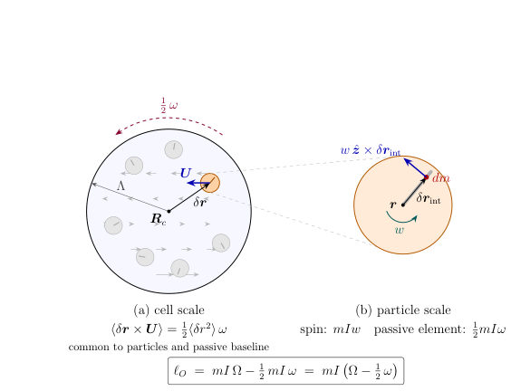
<figcaption class="paper-figure-caption"><b>Fig 1.</b> FIG. 1. Hydrodynamic derivation of the orbital moment. (a) Coarse-graining cell of radius Λ centred at Rc, with particles distributed isotropically in a background flow that contains both strain and rotation. The cell-scale orbital term, Eq. (5), is common to the particles and to the passive baseline and cancels. (b) Particle scale: a mass element dm at δrint from the particle centre contributes mIw through the spin, against 1 2mIω for a passive fluid element with the same mass distri- bution. The difference gives Eq. (9).</figcaption>
</figure>
<figure class="paper-figure-card">
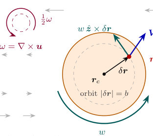
<figcaption class="paper-figure-caption"><b>Fig 2.</b> FIG. 2. Microscopic derivation of the orbital moment. The disk rotates rigidly with angular velocity w (teal), carrying the active point ra, at δr from its center rc, along the orbit |δr| = b. It is immersed in a local background flow u(r) (gray), whose vorticity ω = ∇× u is a local rotation of the fluid at ω/2 (purple). The peculiar velocity V (blue) is measured relative to the flow at ra. Averaged over orientations, the spin contributes b2Ωto δr × V , and the circulation of u around the orbit 1</figcaption>
</figure>
<figure class="paper-figure-card">
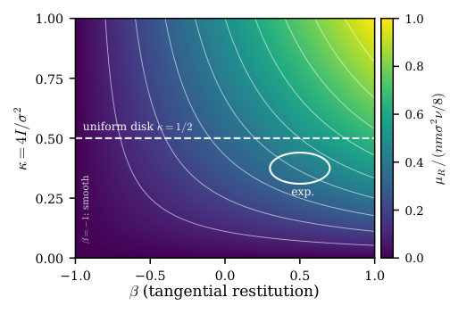
<figcaption class="paper-figure-caption"><b>Fig 3.</b> FIG. 3. Rotational viscosity of rough disks at Gaussian order, Eq. (20), normalized by nmσ2ν/8, in the plane of tangential restitution β and reduced moment of inertia κ. It does not depend on the normal restitution coefficient. Dashed line: uniform disk, κ = 1/2. Ellipse: approximate range of the experimental disks in a previous work [14].</figcaption>
</figure>
</div>

<p><strong>Summary.</strong> This work derives the microscopic origin of the chiral pressure in a 2D chiral fluid, showing it arises from an orbital moment related to the particle's spin mismatch with the local flow. The chiral pressure is found to be non-zero even in a steady, homogeneous state, demonstrating a fundamental, non-dissipative mechanical response to chirality.</p>
<p><strong>Why it may be interesting.</strong> While focused on classical fluid dynamics, the concept of persistent, non-equilibrium stress (chiral pressure) arising from intrinsic particle asymmetry is analogous to emergent topological or chiral responses studied in quantum many-body systems.</p>
<details>
<summary>Detailed structure</summary>
<p><strong>Main problem.</strong> The paper determines the microscopic origin and mathematical expression for the antisymmetric contribution to the pressure, known as the chiral pressure ($p_R$), in a two-dimensional chiral fluid.</p>
<p><strong>Main result.</strong> The chiral pressure is proportional to the orbital moment ($\ell_O$), which quantifies the mismatch between the mean spin ($\Omega$) and half the local vorticity ($\omega/2$). This pressure persists even in a homogeneous, steady state (QCS).</p>
<p><strong>Method.</strong> The derivation uses a combination of hydrodynamic comparisons (cell-scale vs. particle-scale) and microscopic kinematics, analyzing the spin balance equation to derive the constitutive relations.</p>
<p><strong>Model / system.</strong> The system is a two-dimensional fluid composed of rough, actively rotating particles (disks). The analysis treats the fluid dynamics using concepts from micropolar hydrodynamics.</p>
<p><strong>Key observables.</strong> Chiral pressure ($p_R$), Orbital moment ($\ell_O$), Rotational viscosity ($\mu_R$), Quiescent Chiral State (QCS).</p>
<p><strong>Important parameters / regimes.</strong> The chiral pressure and viscosity are computed to Gaussian order in gradients, and the system depends on particle properties like moment of inertia ($mI$) and collision parameters ($eta, \kappa$).</p>
<p><strong>Assumptions / limitations.</strong> The analysis assumes structural asymmetry causing parity breaking and is accurate to second order in gradients, neglecting higher-order translational-rotational correlations.</p>
<p><strong>Figures summary.</strong> Figure 1 illustrates the hydrodynamic derivation of the orbital moment ($\ell_O$) at different scales. Figure 2 shows the microscopic derivation relating particle spin, flow, and peculiar velocity. Figure 3 details the dependence of rotational viscosity ($\mu_R$) on restitution and inertia.</p>
<p><strong>Paper structure.</strong> The paper establishes the need for $p_R$ by analyzing the spin balance equation. It then derives $\ell_O$ using both coarse-graining and microscopic kinematics. Finally, it computes the constitutive relation for $p_R$ and $\mu_R$, showing their persistence in the QCS.</p>
</details>
<details>
<summary>Abstract</summary>
<p>We show that a two-dimensional chiral fluid supports an antisymmetric contribution to the pressure, and determine its microscopic expression. Its origin lies outside the standard kinetic and collisional channels of the normal pressure tensor, stemming instead from the average of a parity-breaking pseudo-scalar. This chiral pressure is set by the rotational (vortex) viscosity of micropolar hydrodynamics, whose kinetic value for rough disks we compute here, to Gaussian order. Crucially, both the chiral pressure and the rotational viscosity survive at zeroth order in the gradients, meaning they persist even in the fully homogeneous fluid -- which we show is not only well defined but steady (the Quiescent Chiral State, QCS). Since this averaged pseudo-scalar does not vanish in a chiral fluid, any expansion of its distribution function must contain terms in this pseudo-scalar variable.</p>
</details>
<p><sub><a href="#top">↑ back to top</a></sub></p>

<p><a id="paper-2610.01659"></a></p>
<h3 id="optimal-sampling-strategies-in-event-chain-monte-carlo"><a href="http://arxiv.org/abs/2610.01659v1">Optimal sampling strategies in event-chain Monte Carlo</a></h3>
<p><strong>Authors:</strong> James Gulliford, Gareth O. Roberts, Michael F. Faulkner<br>
<strong>Type:</strong> theory · <strong>Category:</strong> numerical methods · <strong>PDF:</strong> <a href="https://arxiv.org/pdf/2610.01659v1">https://arxiv.org/pdf/2610.01659v1</a><br>
<strong>Analysis basis:</strong> full PDF text, analyzed in chunks
<strong>Topic relevance:</strong> <code>Frenkel-Kontorova</code> <strong>1/5</strong> · <code>methods for driven-dissipative</code> <strong>1/5</strong></p>
<div class="figure-strip-hint">↔ Scroll figures horizontally</div>
<div class="paper-figures-scroll">
<figure class="paper-figure-card">
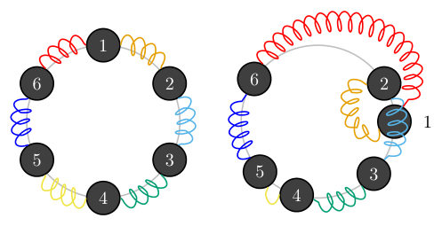
<figcaption class="paper-figure-caption"><b>Fig 1.</b> FIG. 1. Schematic for both the index space I (defined in Section II B) and generalised harmonic chain (defined in Sec- tion III B). The left/right subfigure is an example configu- ration at/perturbed from the mode. The particle ordering {1, . . . , N} within I is fixed based on the modal state-space configuration at the start of the simulation, i.e. assuming starting at the mode (e.g. left). The state-space ordering at a later time may not therefore correspond to the index-space ordering (e.g. right). In the generalised harmonic chain, par- ticle interactions are mediated by 1D spring vectors xij ∈R between neighbours (i, j) on I, subject to the constraint P</figcaption>
</figure>
<figure class="paper-figure-card">
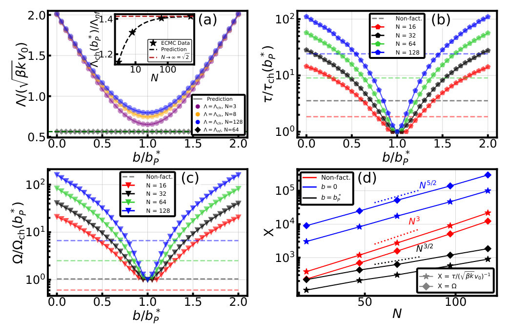
<figcaption class="paper-figure-caption"><b>Fig 2.</b> FIG. 2. Comparative performance of cell-horizon ECMC against both non-factorised and standard-factorised ECMC. Metrics are measured for the p = 2 generalised harmonic chain with mean particle density ρ = √βk/2 ((βk)−1/p sets a lower length scale). (a) MC estimates and analytic predictions of the mean event rate of cell-horizon ECMC (Λch) and non-factorised ECMC (Λnf) as functions of b and N (n.b. b does not modify non-factorised ECMC, as predicted). We observe excellent agreement between the estimates and predictions, with Λch minimised at b = b∗ P , as predicted. Inset: The ratio Λch(b = b∗ P )/Λnf emphasises that non-factorised ECMC outperforms cell-horizon ECMC for all N &gt; 2 by this...</figcaption>
</figure>
<figure class="paper-figure-card">
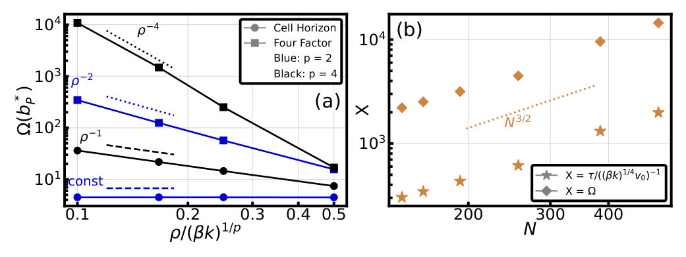
<figcaption class="paper-figure-caption"><b>Fig 3.</b> FIG. 3. Comparative performance of cell-horizon ECMC against four-factor ECMC. (a) MC estimates of the computational effort Ω(defined in Section III) of both methods as a function of ρ at fixed N = 16 and at optimal b = b∗ P for both the p = 2 and p = 4 generalised harmonic chain ((βk)−1/p sets a lower length scale). For p = 2, results are consistent with Ωbeing insensitive to ρ (cell-horizon ECMC) and O(ρ−2) (four-factor ECMC). For p = 4, results are consistent with Ωbeing O(ρ−1) (cell-horizon ECMC) and O(ρ−4) (four-factor ECMC). This reflects cell-horizon ECMC circumventing the impractically large Ω of four-factor ECMC at large b∗(at small ρ in this case). Lines are a guide to the eye....</figcaption>
</figure>
<figure class="paper-figure-card">
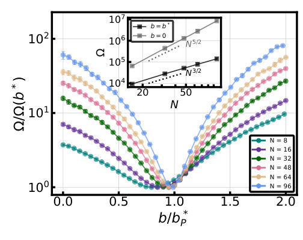
<figcaption class="paper-figure-caption"><b>Fig 4.</b> FIG. 4. MC estimates of the computational effort Ω(de- fined in Section III) of cell-horizon ECMC as a function of b and N for the κ = 2 1D soft-disk model with mean parti- cle density ρ = (3/4)/σ. Results are consistent with Ωbeing minimised at b = b∗ P in the large-N limit. Inset: Ωas a function of N at fixed ρ = (3/4)/σ at b = 0 and b = b∗. Re- sults are consistent with Ωbeing O(N 5/2) and O(N 3/2) for the standard-factorised and optimal cell-horizon approaches. This reflects cell-horizon ECMC hugely outperforming other methods by the key metric of sampling performance (Ω), even in the presence of positive singularities and long-range inter- actions. Lines are a guide to the eye. Results...</figcaption>
</figure>
<figure class="paper-figure-card">
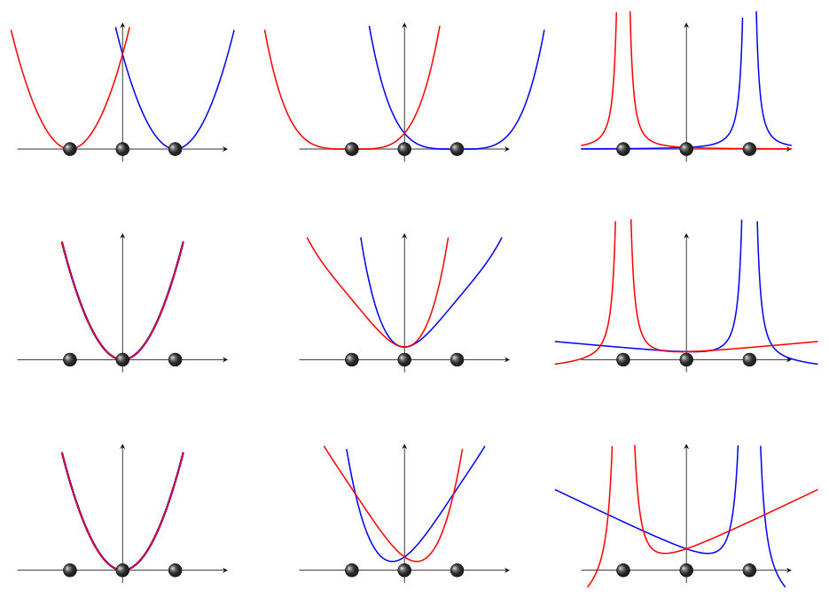
<figcaption class="paper-figure-caption"><b>Fig 5.</b> FIG. 5. Schematics illustrating the effect of key choices of b. For modal state-space configurations, the functions Ua,a−1−bxa,a−1 (red) and Ua+1,a −bxa+1,a (blue) are presented at b = 0, b = b∗ Λ and b = b∗ P for both the generalised harmonic chain (GHC; p = 2 and p = 4) and 1D soft-disk model. Green curves represent Ua,a−1 −bxa,a−1 and Ua+1,a −bxa+1,a functions that coincide and y-shifts have been applied for illustrative purposes. For the p = 2 GHC, b∗ Λ = b∗ P . For all other models, the value of b that minimises the mean event rate (b∗ Λ) does not coincide with that which induces optimal autocorrelation (b∗ P ).</figcaption>
</figure>
</div>

<p><strong>Summary.</strong> This paper presents a significant advancement in computational sampling by proposing the 'Cell-horizon ECMC' method for simulating interacting particles on a 1D torus. It rigorously compares this new strategy against existing methods, demonstrating superior computational efficiency and robustness across various particle densities. The work provides a powerful, general framework for simulating complex statistical mechanical systems.</p>
<p><strong>Why it may be interesting.</strong> The development of highly efficient, general sampling algorithms like this is crucial for simulating complex many-body systems in statistical mechanics, providing computational tools applicable to quantum many-body physics simulations.</p>
<details>
<summary>Detailed structure</summary>
<p><strong>Main problem.</strong> The paper aims to develop and compare optimal sampling strategies for Event-Chain Monte Carlo (ECMC) methods to surpass the computational efficiency of established algorithms like Molecular Dynamics (MD) and Hamiltonian Monte Carlo (HMC).</p>
<p><strong>Main result.</strong> The authors introduce a universal framework, the 'Cell-horizon ECMC,' which achieves superior sampling efficiency, showing a better scaling and a higher mean event rate compared to non-factorised or standard-factorised ECMC methods.</p>
<p><strong>Method.</strong> The work involves deriving and comparing the mean event rates ($\Lambda$) and autocorrelation times ($   au_{mix}$) for various ECMC formulations, including non-factorised and cell-horizon approaches, using mathematical analysis of continuous-time Markov processes.</p>
<p><strong>Model / system.</strong> The primary model is $N$ pairwise-interacting particles confined to a 1D torus, governed by a potential $U$. Examples include the generalized harmonic chain (GHC) and the 1D soft-disk model (SD).</p>
<p><strong>Key observables.</strong> Sampling efficiency, mean event rate ($\Lambda$), autocorrelation time ($   au_{mix}$), and the normalized pressure ($eta P$).</p>
<p><strong>Important parameters / regimes.</strong> Number of particles ($N$), inverse temperature ($eta$), and the density ($
ho$) of the system.</p>
<p><strong>Assumptions / limitations.</strong> The analysis assumes translational symmetry for the pairwise potentials and relies on approximations when deriving the optimal cell-horizon rate.</p>
<p><strong>Figures summary.</strong> Figure 8 compares the mixing times ($  au_{mix}$) for standard-factorised and optimal cell-horizon ECMC, showing $O(N^{5/2})$ vs $O(N^2)$ scaling for the GHC. Figure 7 confirms thermodynamic consistency by equating the normalized pressure ($eta P$) with the ratio of index-space velocities ($v_{idx}/v_0$).</p>
<p><strong>Paper structure.</strong> The paper progresses by first detailing existing ECMC strategies (non-factorised, standard-factorised), then introducing the novel cell-horizon framework, mathematically deriving its optimal rate, and finally comparing its performance and thermodynamic consistency against established methods.</p>
</details>
<details>
<summary>Abstract</summary>
<p>Event-chain Monte Carlo (ECMC) has revolutionised computational sampling over recent years, providing a powerful alternative to the molecular-dynamics (MD) and Hamiltonian Monte Carlo (HMC) algorithms. Each method outperforms the ubiquitous random-walk Metropolis algorithm by advancing particles along deterministic trajectories, but ECMC achieves this without being constrained by Newtonian dynamics. Recent advances exploited this dynamical freedom to induce a collective particle dynamics that relax local density variations on fast timescales. In a foundational model of $N$ pairwise-interacting particles on the 1D torus, this led to an $O(N^{3/4})$ improvement on the industry-leading computational efficiency of MD and HMC - but with an impractically small prefactor at low/high mean particle density for general attractive/repulsive interactions. Here we present a universal framework that generalises this high-efficiency sampling strategy to all translationally symmetric pairwise models on the torus - creating the potential to surpass MD and HMC as the state of the art. We also numerically elucidate the collective particle dynamics and discuss broad impact across the physical sciences and computational statistics.</p>
</details>
<p><sub><a href="#top">↑ back to top</a></sub></p>

<p><a id="paper-2610.02172"></a></p>
<h3 id="robust-exponential-lower-bounds-for-fermionic-and-bosonic-gaussian-ranks"><a href="http://arxiv.org/abs/2610.02172v1">Robust exponential lower bounds for fermionic and bosonic Gaussian ranks</a></h3>
<p><strong>Authors:</strong> Fuchuan Wei, Kong-Wing Wu, Zhengwei Liu, Zi-Wen Liu<br>
<strong>Type:</strong> theory · <strong>Category:</strong> quantum information and computing · <strong>PDF:</strong> <a href="https://arxiv.org/pdf/2610.02172v1">https://arxiv.org/pdf/2610.02172v1</a><br>
<strong>Analysis basis:</strong> full PDF text, analyzed in chunks
<strong>Topic relevance:</strong> <code>Keldysh / 2PI / non-Gaussian methods</code> <strong>1/5</strong> · <code>analog quantum simulation</code> <strong>1/5</strong></p>
<div class="figure-strip-hint">↔ Scroll figures horizontally</div>
<div class="paper-figures-scroll">
<figure class="paper-figure-card">
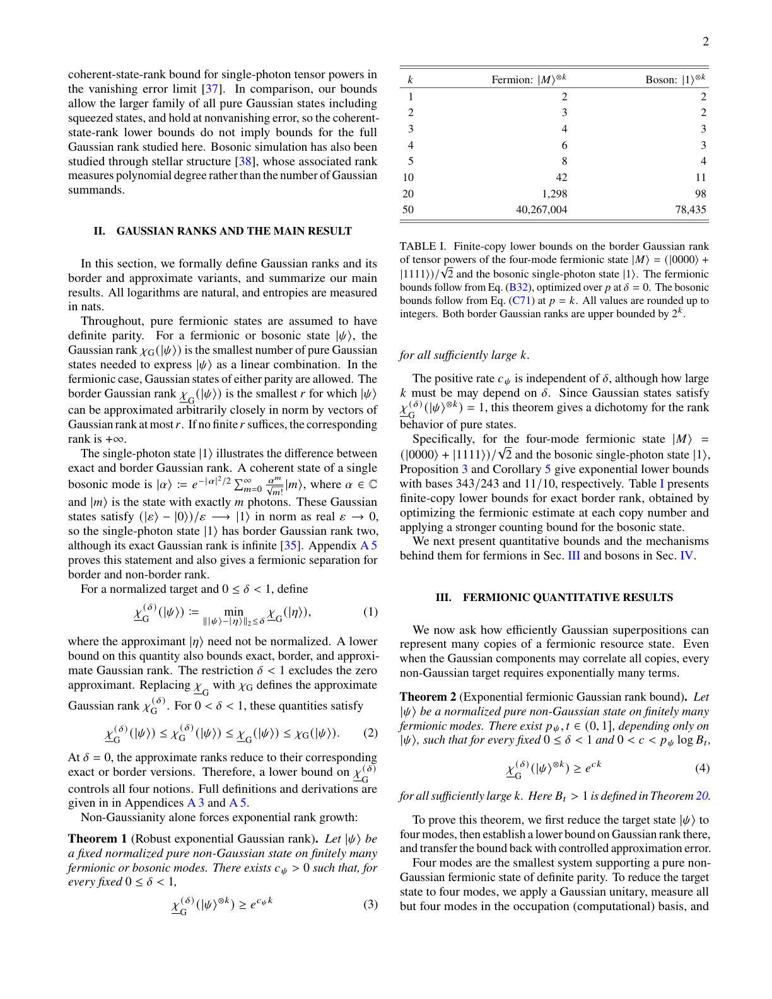
<figcaption class="paper-figure-caption"><b>Fig 1.</b> Low-resolution page preview, page 2</figcaption>
</figure>
<figure class="paper-figure-card">
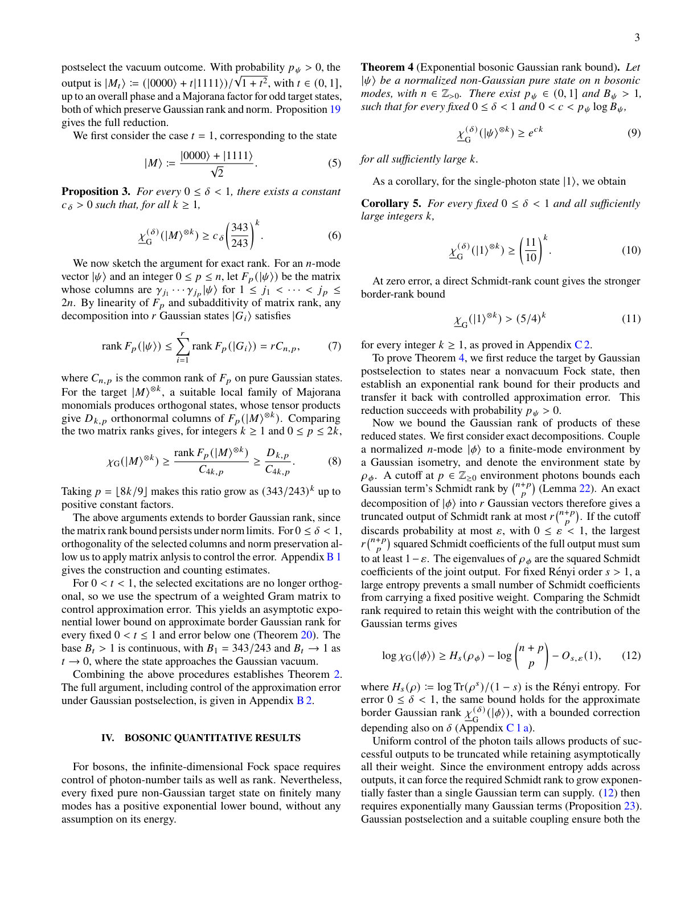
<figcaption class="paper-figure-caption"><b>Fig 2.</b> Low-resolution page preview, page 3</figcaption>
</figure>
<figure class="paper-figure-card">
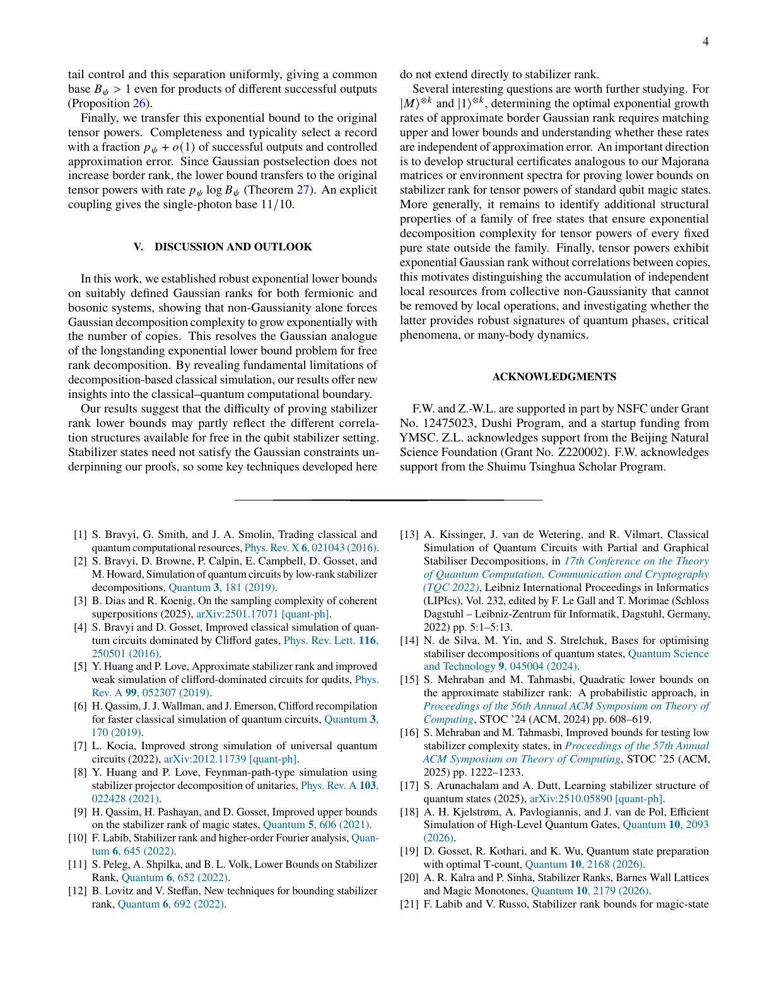
<figcaption class="paper-figure-caption"><b>Fig 3.</b> Low-resolution page preview, page 4</figcaption>
</figure>
<figure class="paper-figure-card">
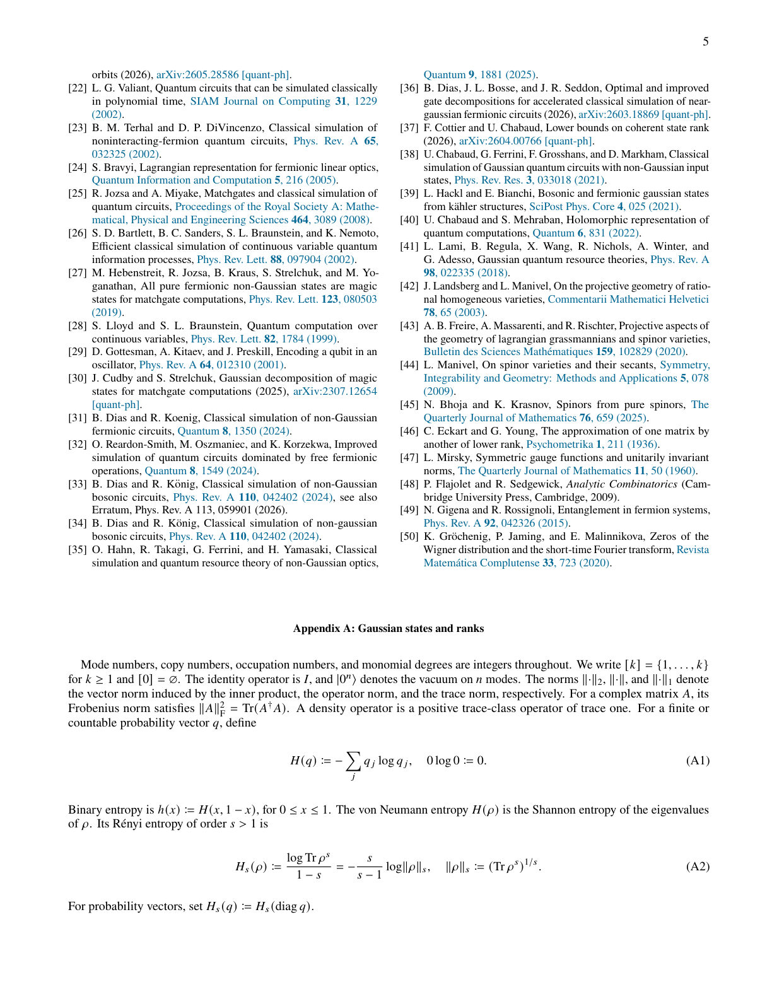
<figcaption class="paper-figure-caption"><b>Fig 4.</b> Low-resolution page preview, page 5</figcaption>
</figure>
<figure class="paper-figure-card">
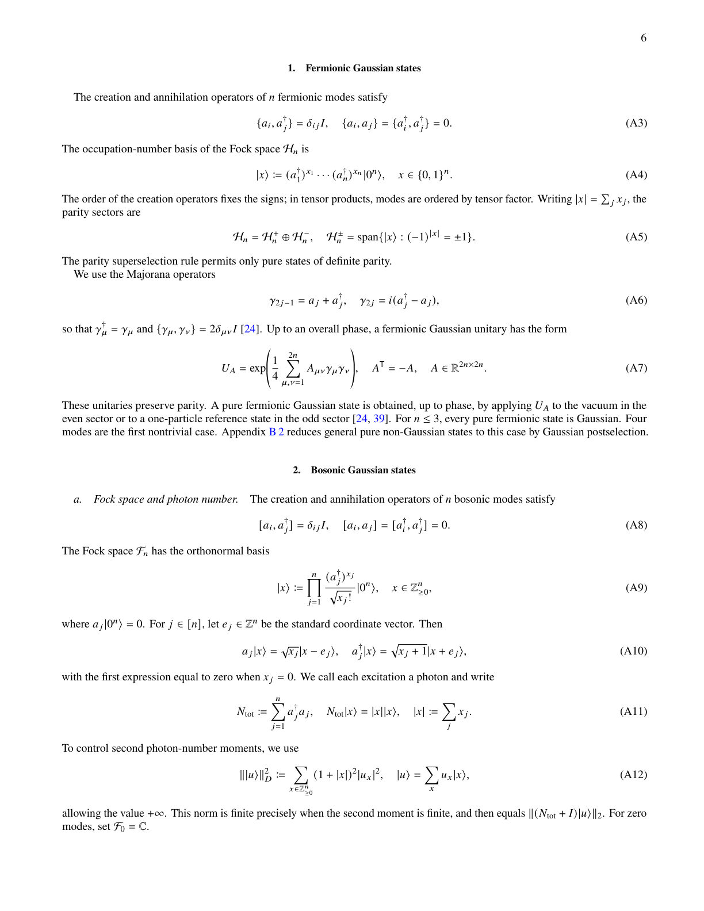
<figcaption class="paper-figure-caption"><b>Fig 5.</b> Low-resolution page preview, page 6</figcaption>
</figure>
</div>

<p><strong>Summary.</strong> This paper derives rigorous, exponential lower bounds for the Gaussian rank of tensor powers of non-Gaussian fermionic and bosonic states. By showing that this rank grows exponentially, the authors establish fundamental limitations on the ability of classical simulation techniques to efficiently model these quantum systems. This work is crucial for understanding the computational power gap between quantum and classical computation.</p>
<p><strong>Why it may be interesting.</strong> This work directly addresses the resource theory of quantum computation by quantifying the non-classical resources (non-Gaussianity) required for quantum advantage over classical simulation methods.</p>
<details>
<summary>Detailed structure</summary>
<p><strong>Main problem.</strong> The paper establishes robust exponential lower bounds for the Gaussian rank of fermionic and bosonic quantum states, which quantifies the difficulty of classically simulating quantum systems.</p>
<p><strong>Main result.</strong> It proves that for pure non-Gaussian states, the approximate Gaussian rank of their tensor powers grows at least exponentially with the number of copies, setting fundamental limits on decomposition-based classical simulation.</p>
<p><strong>Method.</strong> The authors combine techniques including reduction to four modes with Majorana spectral bounds (fermions) and entropy-based rank bounds via Gaussian postselection (bosons).</p>
<p><strong>Model / system.</strong> The study focuses on pure non-Gaussian states in both fermionic and bosonic systems, analyzing the tensor powers of states like the fermionic GHZ state and the bosonic single-photon state.</p>
<p><strong>Key observables.</strong> Gaussian Rank ($\chi_G$), Border Gaussian Rank, Approximate Gaussian Rank ($\chi^{(\delta)}_G$), and the exponential growth rate of these ranks.</p>
<p><strong>Important parameters / regimes.</strong> The approximation error $\delta$ must be less than 1, and the analysis depends on the number of tensor copies, $k$.</p>
<p><strong>Assumptions / limitations.</strong> The results are proven for pure non-Gaussian states, and the techniques rely on the existence of specific Gaussian isometries and positive entropy gaps.</p>
<p><strong>Figures summary.</strong> TABLE I provides finite-copy lower bounds on the border Gaussian rank for the four-mode fermionic GHZ state and the bosonic single-photon state for small numbers of copies.</p>
<p><strong>Paper structure.</strong> The paper develops from defining the problem via Gaussian rank, establishing bounds for specific states (GHZ, single-photon), and culminating in general theorems proving exponential growth rates using entropy and isometry arguments.</p>
</details>
<details>
<summary>Abstract</summary>
<p>The power and limitations of classical simulation are central to understanding quantum computational advantages. A leading simulation paradigm is based on coherent decomposition into classically tractable free states where the decomposition rank determines the simulation complexity. Proving strong lower bounds on this number is a notoriously difficult and mathematically rich problem, as exemplified by the qubit stabilizer rank problem. Here, we study the Gaussian version of this problem in both bosonic and fermionic systems and establish robust exponential lower bounds on Gaussian rank. In particular, we prove that for every pure non-Gaussian state on finitely many modes, with definite parity in the fermionic case, the approximate border Gaussian rank of its tensor powers grows at least exponentially at any fixed norm error below one. Our proofs combine reduction to four modes with Majorana spectral bounds for fermions, and Gaussian postselection with an entropy-based rank bound for bosons. As concrete examples, we derive explicit exponential lower bounds for the four-mode fermionic GHZ state and the bosonic single-photon state. The bosonic results require no assumption on the energy of the target state. Our results show that non-Gaussianity universally entails exponential Gaussian decomposition complexity, setting fundamental limitations on decomposition-based classical simulation of bosonic and fermionic systems.</p>
</details>
<p><sub><a href="#top">↑ back to top</a></sub></p>

<p><a id="paper-2610.01672"></a></p>
<h3 id="scalar-field-theory-for-chiral-active-brownian-particles-bottom-up-derivation-revisited"><a href="http://arxiv.org/abs/2610.01672v1">Scalar field theory for (chiral) active Brownian particles: bottom-up derivation revisited</a></h3>
<p><strong>Authors:</strong> Yuta Kuroda, Thomas Speck<br>
<strong>Type:</strong> theory · <strong>Category:</strong> statistical mechanics · <strong>PDF:</strong> <a href="https://arxiv.org/pdf/2610.01672v1">https://arxiv.org/pdf/2610.01672v1</a><br>
<strong>Analysis basis:</strong> full PDF text, analyzed in chunks
<strong>Topic relevance:</strong> <code>Keldysh / 2PI / non-Gaussian methods</code> <strong>1/5</strong> · <code>non-equilibrium universality</code> <strong>1/5</strong></p>
<div class="figure-strip-hint">↔ Scroll figures horizontally</div>
<div class="paper-figures-scroll">
<figure class="paper-figure-card">
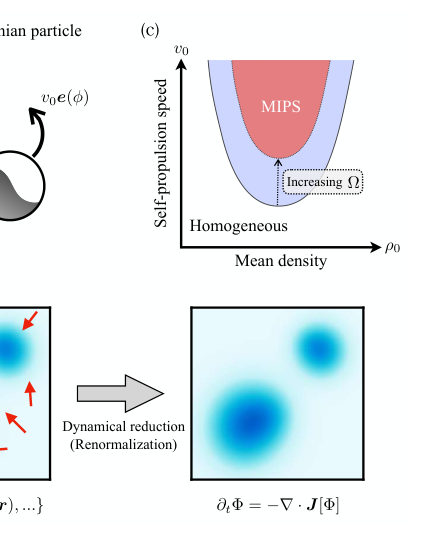
<figcaption class="paper-figure-caption"><b>Fig 1.</b> Figure 1. Schematic illustration of (a) the active Brownian particle model and (b) the chiral active Brownian particle model. (c) Schematic of the phase diagram of fluid states of interacting (chiral) ABPs. The blue and red areas represent the coexistence regions in ABPs and cABPs, respectively. (d) Coarse-graining procedure in this paper.</figcaption>
</figure>
<figure class="paper-figure-card">
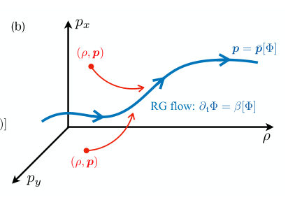
<figcaption class="paper-figure-caption"><b>Fig 2.</b> Figure 2. (a) Schematic illustration of the construction of the envelope (blue line) from the local solutions (gray lines) obtained using perturbation theory. (b) Schematic of the slow invariant manifold in (ρ, p)-space. The blue line represents the invariant manifold p = ¯p[Φ], which is parameterized by the density Φ. Fast relaxation is schematically depicted by the red arrows. The slow dynamics on the invariant manifold is governed by the RG equation.</figcaption>
</figure>
</div>

<p><strong>Summary.</strong> This paper provides a rigorous theoretical framework to derive continuum scalar field theories for active matter systems, starting from the microscopic dynamics of Active Brownian Particles (ABPs). By employing the Renormalization Group method, the authors successfully connect particle interactions to macroscopic field equations, notably identifying unique chiral terms in the resulting theory.</p>
<p><strong>Why it may be interesting.</strong> While focused on classical active matter, the rigorous application of the Renormalization Group method to derive effective, long-wavelength continuum theories from microscopic particle dynamics is a powerful theoretical tool applicable to non-equilibrium many-body systems.</p>
<details>
<summary>Detailed structure</summary>
<p><strong>Main problem.</strong> The primary goal is to establish a systematic, bottom-up derivation connecting microscopic particle-based models of active matter to continuum descriptions, specifically scalar field theories.</p>
<p><strong>Main result.</strong> The authors successfully derived scalar field theories for both standard and chiral Active Brownian Particles (ABPs) using the Renormalization Group (RG) method. For the chiral variant, the resulting field theory contains two unique 'odd' non-equilibrium terms.</p>
<p><strong>Method.</strong> The derivation employs a combination of the pressure expansion, the Renormalization Group (RG) method within singular perturbation theory, and closure approximations to systematically eliminate fast variables and derive flow equations for the slow dynamics.</p>
<p><strong>Model / system.</strong> The study focuses on Active Brownian Particles (ABPs) and their chiral variant (cABPs), which are widely used models for scalar active fluids exhibiting phenomena like Motility-Induced Phase Separation (MIPS).</p>
<p><strong>Key observables.</strong> Density field $
ho(\mathbf{r}, t)$, phase separation coexistence regions, and the coefficients of the derived scalar field theory up to $\mathcal{O}(
abla^4)$.</p>
<p><strong>Important parameters / regimes.</strong> Self-propulsion speed ($v_0$), rotational diffusion coefficient ($   au_p$), and the strength of the chirality bias (torque).</p>
<p><strong>Assumptions / limitations.</strong> The derivation relies on the pressure expansion and the RG method, while the closure approximation used for the pair distribution function is noted as the only non-systematic step.</p>
<p><strong>Figures summary.</strong> The figures schematically illustrate the dynamics for ABP and cABP, and one figure shows the MIPS coexistence region, analogous to equilibrium liquid-vapor separation.</p>
<p><strong>Paper structure.</strong> The paper progresses by first identifying the challenge of connecting microscopic ABPs to continuum field theories. It then details the methodology—using pressure expansion and RG—to derive the field theory, applying it first to ABPs, and finally extending the method to the chiral ABP (cABP) model.</p>
</details>
<details>
<summary>Abstract</summary>
<p>The active Brownian particle (ABP) model is one of the most widely used particle-based models in studies of scalar active fluids. A collection of interacting ABPs is known to exhibit intriguing phenomena that are absent in equilibrium counterparts. A prominent example is spontaneous phase separation, known as motility-induced phase separation (MIPS), which occurs even in the absence of explicit attractive interactions. In parallel, the large-scale behavior of scalar active fluids is often modeled using continuum descriptions, namely, scalar field theories. Such scalar active field theories are usually formulated in a top-down manner, and establishing their connections to particle-based models remains challenging, with these connections not yet fully understood. To advance the microscopic derivation of scalar active field theories, we revisit the connection between ABPs interacting via a two-body potential in two dimensions and scalar field theories that include all possible terms up to fourth order in spatial gradients. Our approach is based on a pressure expansion and the renormalization group (RG) method in the context of singular perturbation theory. The RG method provides a systematic way to eliminate fast variables and identify the dynamics on the slow invariant manifold. Within this framework, scalar field theories can be obtained as RG flow equations. We also apply this method to a chiral variant of the ABP model, the chiral ABP (cABP) model, in which a constant torque biases particle rotation to the left or right. We show that the scalar field theory corresponding to the cABP model contains two ``odd'' terms in addition to those present in the scalar field theory for ABPs. The method developed here may also be useful for deriving hydrodynamic descriptions of other types of active matter systems.</p>
</details>
<p><sub><a href="#top">↑ back to top</a></sub></p>

<p><a id="paper-2610.01600"></a></p>
<h3 id="why-polar-excitons-stay-sharp-parity-protection-of-the-center-of-mass-recoil-channel-in-exciton-phonon-scattering"><a href="http://arxiv.org/abs/2610.01600v1">Why polar excitons stay sharp: parity protection of the center-of-mass recoil channel in exciton-phonon scattering</a></h3>
<p><strong>Authors:</strong> Michael O. Atambo<br>
<strong>Type:</strong> theory · <strong>Category:</strong> other · <strong>PDF:</strong> <a href="https://arxiv.org/pdf/2610.01600v1">https://arxiv.org/pdf/2610.01600v1</a><br>
<strong>Analysis basis:</strong> full PDF text, analyzed in chunks
<strong>Topic relevance:</strong> <code>Keldysh / 2PI / non-Gaussian methods</code> <strong>1/5</strong> · <code>correlated / nonlocal dissipation</code> <strong>1/5</strong></p>
<div class="figure-strip-hint">↔ Scroll figures horizontally</div>
<div class="paper-figures-scroll">
<figure class="paper-figure-card">
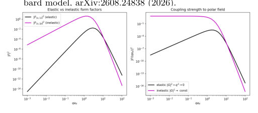
<figcaption class="paper-figure-caption"><b>Fig 1.</b> FIG. 1. (Color online) Internal-state-preserving (black) and internal-state-changing (magenta) excitonic form factors. Left: |F|2; right: coupling strength |F/(qaX)|2 to the po- lar field. The internal-state-preserving vertex vanishes as q2</figcaption>
</figure>
<figure class="paper-figure-card">
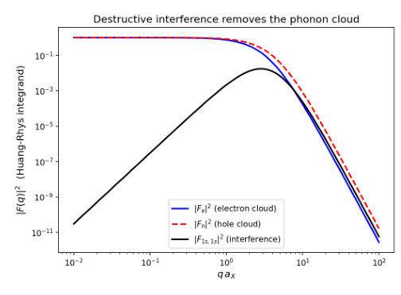
<figcaption class="paper-figure-caption"><b>Fig 2.</b> FIG. 2. (Color online) Huang–Rhys integrands. Destructive interference removes the small-q phonon cloud, confining the elastic dressing to intermediate q.</figcaption>
</figure>
<figure class="paper-figure-card">
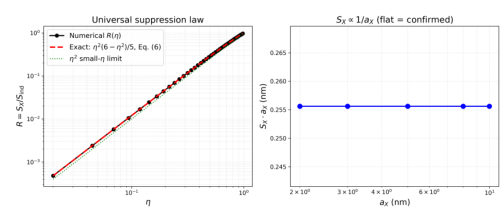
<figcaption class="paper-figure-caption"><b>Fig 3.</b> FIG. 3. (Color online) Universal suppression law. Left: R(η) = SX/Sind (points) against the exact law η2(6 −η2)/5, Eq. (6) (dashed). Right: exact 1/aX scaling of SX.</figcaption>
</figure>
<figure class="paper-figure-card">
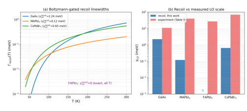
<figcaption class="paper-figure-caption"><b>Fig 4.</b> FIG. 4. (Color online) (a) Temperature dependence of the internal-state-preserving recoil linewidths Γrecoil(T) = γrecoil LO NLO(T) using the parameter-free baselines of Table I; for FAPbI3 the rate is exactly zero at all T by Eq. (3). (b) Re- coil coefficients (blue) against the measured LO-related scales (red, Table I). The recoil channel supplies the GaAs bound- state baseline but lies two to three orders of magnitude below the perovskite benchmarks, which therefore require internal- state-changing channels (not shown).</figcaption>
</figure>
<figure class="paper-figure-card">
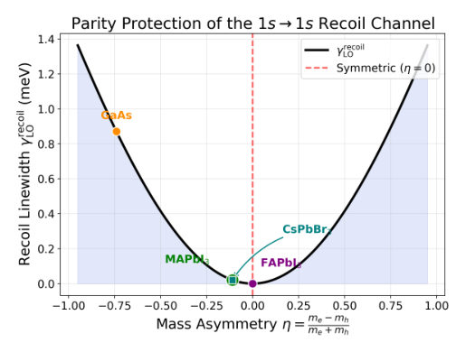
<figcaption class="paper-figure-caption"><b>Fig 5.</b> FIG. 5. (Color online) Parity protection of the 1s →1s COM recoil channel. The parameter-free recoil linewidth, Eq. (9), vanishes exactly at η = 0 (mass symmetry). Mass- symmetric perovskites sit at the protected minimum, forcing their linewidth onto the inelastic 1s →np channel; mass- asymmetric GaAs sits on the unprotected branch.</figcaption>
</figure>
</div>

<p><strong>Summary.</strong> This theoretical work explains the anomalous sharpness of excitons in polar semiconductors by rigorously including the center-of-mass recoil degree of freedom. It demonstrates that parity protection causes the primary recoil scattering channel to vanish in mass-symmetric materials. Consequently, the observed linewidths must instead be governed by internal-state-changing inelastic channels, establishing a clear hierarchy of controlling physical parameters.</p>
<p><strong>Why it may be interesting.</strong> This work provides a detailed, quantitative understanding of how fundamental symmetries (parity) and kinematic constraints (COM recoil) dictate the coherence properties of excitons in solid-state materials, which is crucial for designing stable quantum emitters.</p>
<details>
<summary>Detailed structure</summary>
<p><strong>Main problem.</strong> The paper addresses the theoretical puzzle of why excitonic resonances in polar semiconductors, despite strong electron-phonon coupling, remain anomalously sharp.</p>
<p><strong>Main result.</strong> The sharpness is governed by a hierarchy of scattering channels, where the internal-state-preserving center-of-mass recoil channel is suppressed by parity protection in mass-symmetric materials, forcing the linewidth to be determined by inelastic transitions.</p>
<p><strong>Method.</strong> The authors use a theoretical framework based on the Fröhlich interaction, incorporating the exact center-of-mass (COM) recoil degree of freedom into the exciton-phonon scattering rate calculations.</p>
<p><strong>Model / system.</strong> The system is excitons coupled to polar optical phonons in polar semiconductors, modeled using the hydrogenic Fröhlich Hamiltonian. The analysis distinguishes between mass-asymmetric and mass-symmetric materials.</p>
<p><strong>Key observables.</strong> Recoil linewidth ($\gamma_{	ext{recoil}}^{	ext{LO}}$), Huang-Rhys factor ratio ($S_X/S_{	ext{ind}}$), and the overall exciton linewidth ($\gamma_{	ext{exp}}^{	ext{LO}}$).</p>
<p><strong>Important parameters / regimes.</strong> Mass asymmetry parameter ($\eta$), recoil momentum ($q_*$), and the Rydberg detuning ($\Delta E_{np} - \hbar\omega_{	ext{LO}}$).</p>
<p><strong>Assumptions / limitations.</strong> The analysis relies on extending standard treatments by including the full COM recoil kinematics and assuming the validity of the hydrogenic envelope functions for the exciton.</p>
<p><strong>Figures summary.</strong> Figures illustrate the form factors for internal-state-preserving and changing channels, showing the vanishing vertex due to parity protection, and present the universal suppression law for the Huang-Rhys factor ratio.</p>
<p><strong>Paper structure.</strong> The paper progresses by first identifying the failure of standard treatments, then introducing the COM recoil to derive a parameter-free $1s 	o 1s$ channel, proving its suppression via parity rules for $\eta=0$, and finally establishing the hierarchy of controlling parameters ($\eta, q^*a_X, \Delta E_{np} - \hbar\omega_{	ext{LO}}$) that dictate the observed linewidths.</p>
</details>
<details>
<summary>Abstract</summary>
<p>In polar semiconductors the Fröhlich interaction is the dominant electron--phonon coupling, yet excitonic resonances in materials such as halide perovskites remain anomalously sharp. We show that standard frozen-center-of-mass treatments of the exciton--phonon problem miss the decisive kinematic degree of freedom: restoring the exact center-of-mass (COM) recoil reveals a universally open, parameter-free $1s\to1s$ absorption channel at recoil momentum $q_*=\sqrt{2M_{\rm ex}\hbarω_{\rm LO}}/\hbar$, whose rate scales as $N_{\rm LO}(T)$. We prove that this recoil channel is controlled by destructive electron--hole interference: the recoil linewidth vanishes with the mass asymmetry as $γ_{\rm LO}^{\rm recoil}\propto\mathcal{F}_{1s,1s}(q_*)^2$, and the elastic dressing obeys the exact suppression law $S_X/S_{\rm ind}=η^2(6-η^2)/5$ within the hydrogenic Fröhlich model. The theory establishes a hierarchy of scattering regimes. In mass-asymmetric materials (GaAs, $η=-0.74$) the recoil channel is active ($γ_{\rm LO}^{\rm recoil}=2.2$~meV); in mass-symmetric materials (FAPbI$_3$, $η=0$; MAPbI$_3$, $η=-0.11$) it is killed by interference (0.00 and 0.12 meV), showing that the observed 27--40 meV perovskite linewidths cannot be accounted for by COM recoil and therefore require internal-state-changing and other inelastic channels, of which the constructive, $η$-robust $1s\to np$ resonance is the leading candidate within the present model. The Fröhlich constant $α$ alone is therefore insufficient as a figure of merit: after projection onto the correlated exciton, the controlling parameters are $η$, $q_*a_X$, and the Rydberg detuning.</p>
</details>
<p><sub><a href="#top">↑ back to top</a></sub></p>

<p><a id="paper-2610.01683"></a></p>
<h3 id="a-code-agnostic-graph-neural-network-decoder-from-the-detection-error-model"><a href="http://arxiv.org/abs/2610.01683v1">A Code-Agnostic Graph Neural Network Decoder from the Detection Error Model</a></h3>
<p><strong>Authors:</strong> Federico Alberto Astolfi, Guido Pupillo<br>
<strong>Type:</strong> theory · <strong>Category:</strong> quantum information and computing · <strong>PDF:</strong> <a href="https://arxiv.org/pdf/2610.01683v1">https://arxiv.org/pdf/2610.01683v1</a><br>
<strong>Analysis basis:</strong> full PDF text, analyzed in chunks
<strong>Topic relevance:</strong> <code>quantum measurements</code> <strong>1/5</strong></p>
<div class="figure-strip-hint">↔ Scroll figures horizontally</div>
<div class="paper-figures-scroll">
<figure class="paper-figure-card">
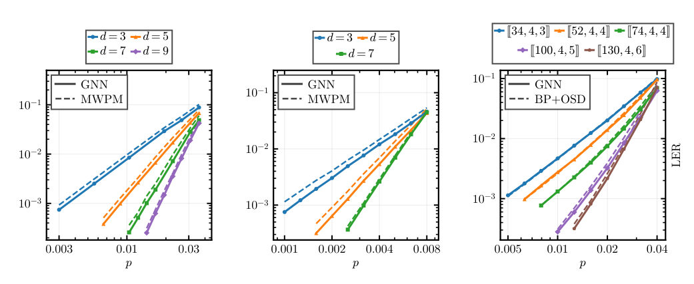
<figcaption class="paper-figure-caption"><b>Fig 1.</b> FIG. 1. Logical error rate of the GNN decoder (solid) against the classical decoder (dashed) as a function of the physical error rate p, on identical shots and with r=d syndrome rounds. The baseline is correlated minimum-weight perfect matching on the two surface-code panels and BP+OSD on the qLDPC panel.</figcaption>
</figure>
<figure class="paper-figure-card">
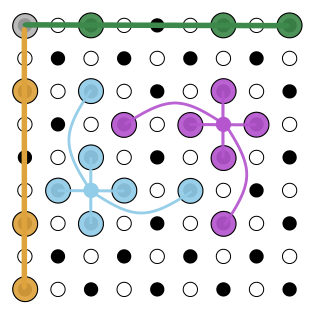
<figcaption class="paper-figure-caption"><b>Fig 2.</b> FIG. 2. The two code families studied in this work.</figcaption>
</figure>
<figure class="paper-figure-card">
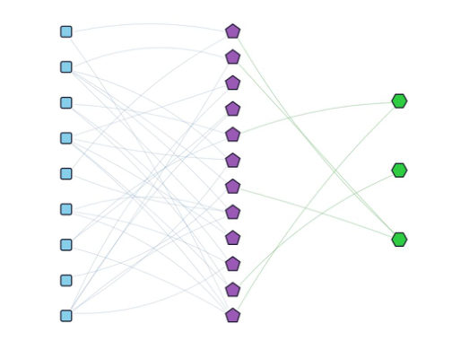
<figcaption class="paper-figure-caption"><b>Fig 3.</b> FIG. 3. Representation of an extended Tanner graph. From left to right, the nodes are the detectors (D), the error mech- anisms (EM), and the logical observable (L) of the detection error model of a surface code. Edges encode which detectors are triggered by each error mechanism and which mechanisms flip the logical observable. An even number of triggers has no effect in the noise regimes that we operate with.</figcaption>
</figure>
<figure class="paper-figure-card">
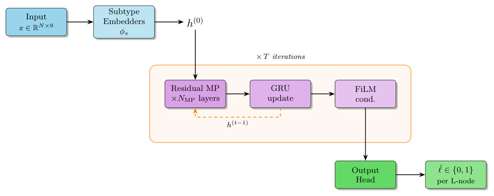
<figcaption class="paper-figure-caption"><b>Fig 4.</b> FIG. 4. Overview of the POLYMECHANON forward pass. The nine-dimensional node features are embedded via subtype- specific linear maps and non-linear activating functions. Over T iterations, representations are refined by NMP residual message- passing layers and updated by a GRU cell (Eq. 6). After, a FiLM conditioning is applied. The final output head maps the L-node representation to a logical error prediction.</figcaption>
</figure>
<figure class="paper-figure-card">
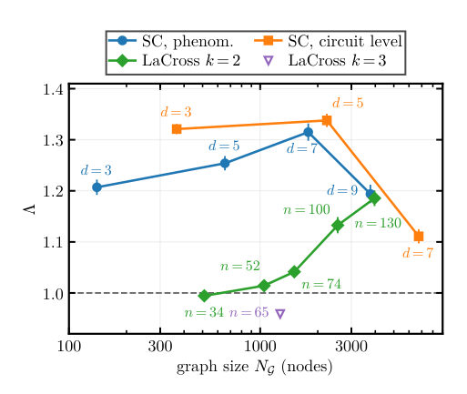
<figcaption class="paper-figure-caption"><b>Fig 5.</b> FIG. 5. Average advantage Λ of the GNN over the reference baseline (Table V) as a function of the size of the graph (Ta- ble II). The reference baseline is correlated MWPM for the surface code (SC) and BP+OSD for LaCross; values above the show the advantage the GNN. Labels give the distance d for the surface code and the number of physical qubits n for LaCross.</figcaption>
</figure>
</div>

<p><strong>Summary.</strong> This paper introduces POLYMECHANON, a Graph Neural Network decoder for quantum error correction that takes only the Detection Error Model (DEM) as input. It demonstrates that this single architecture can decode various stabilizer codes under different noise models, significantly outperforming existing methods in terms of error suppression and computational speed. This advances the field toward universal, hardware-independent quantum computation protocols.</p>
<p><strong>Why it may be interesting.</strong> The focus on a code-agnostic decoder whose input is purely structural (the DEM) is highly relevant for building universal, hardware-agnostic quantum computation protocols.</p>
<details>
<summary>Detailed structure</summary>
<p><strong>Main problem.</strong> To develop a quantum error correction (QEC) decoder that is code-agnostic, meaning it can decode any stabilizer code under any noise model expressible as a Detection Error Model (DEM) without requiring redesign.</p>
<p><strong>Main result.</strong> The proposed GNN decoder, POLYMECHANON, outperforms existing decoders on both surface and qLDPC codes, showing superior scaling and computational efficiency, and enabling confidence-based post-selection.</p>
<p><strong>Method.</strong> The authors use a Graph Neural Network (GNN) decoder whose input is the tripartite graph representation of the Detection Error Model (DEM) of the quantum code and noise structure.</p>
<p><strong>Model / system.</strong> The system involves quantum error correction using stabilizer codes, tested on the rotated surface code and high-rate qLDPC codes. The decoder operates on the DEM, which models detectors, error mechanisms, and logical observables.</p>
<p><strong>Key observables.</strong> Logical Error Rate (LER), decoding time/cost, and the fraction of accepted shots after post-selection.</p>
<p><strong>Important parameters / regimes.</strong> Physical error rate ($p$), code distance ($d$), and the confidence threshold ($   au$).</p>
<p><strong>Assumptions / limitations.</strong> The primary assumption is that the DEM alone contains sufficient information to characterize the decoding problem, allowing a single architecture to generalize across different codes and noise models.</p>
<p><strong>Figures summary.</strong> Figures compare LER vs. physical error rate for different decoders (GNN vs. MWPM vs. BP+OSD) on surface and qLDPC codes, and show the effect of confidence-based post-selection on LER and shot acceptance.</p>
<p><strong>Paper structure.</strong> The paper introduces the code-agnostic GNN decoder based on the DEM, validates its performance against state-of-the-art decoders on multiple code families and noise models, and details the benefits of probabilistic output for post-selection.</p>
</details>
<details>
<summary>Abstract</summary>
<p>We present POLYMECHANON, a graph neural network (GNN) decoder for quantum error correction whose only input is the detection error model (DEM) of a quantum code under a given noise model. We represent the DEM as a tripartite graph of detectors, error mechanisms and logical observables, where every input feature is computed by using the quantum code as data rather than design choice. In this way, the same architecture decodes in principle any stabiliser code, under any noise model that can be expressed as a detection error model, once trained on the DEM. We test this approach along four directions. Firstly, on the rotated surface code the decoder outperforms correlated MWPM under both phenomenological and circuit-level noise, with up to $25\%$ fewer logical failures. Secondly, on a family of high-rate qLDPC codes it matches BP+OSD on the smaller codes and surpasses it on the larger ones, with up to $16\%$ fewer logical failures on $[\![130,4,6]\!]$. Thirdly, its decoding time does not depend on the physical error rate, whereas that of BP+OSD grows with it: on $[\![130,4,6]\!]$ its effective cost per shot is of the order of a few ms on a single GPU against a few tens of milliseconds for BP+OSD on a single CPU core, and its fixed computational graph makes it a candidate for real-time decoding on neutral-atom processors. Finally, a single model trained across codes of different families outperforms uncorrelated MWPM on the graph-like codes seen during training and stays within $10\%$ of BP+OSD on the others, while it tends to fail to generalize to unseen codes, particularly larger ones. Its probabilistic output enables confidence-based post-selection, lowering the logical error rate by more than an order of magnitude on the surface code while keeping more than $90\%$ of the shots. Since only the DEM changes, new codes and noise models can be decoded without redesigning the decoder.</p>
</details>
<p><sub><a href="#top">↑ back to top</a></sub></p>

<p><a id="paper-2610.02097"></a></p>
<h3 id="a-no-go-theorem-for-order-two-clifford-electric-magnetic-duality"><a href="http://arxiv.org/abs/2610.02097v1">A No-Go Theorem for Order-Two Clifford Electric-Magnetic Duality</a></h3>
<p><strong>Authors:</strong> Shunta Takahashi, Zhi Li, Beni Yoshida<br>
<strong>Type:</strong> theory · <strong>Category:</strong> quantum information and computing · <strong>PDF:</strong> <a href="https://arxiv.org/pdf/2610.02097v1">https://arxiv.org/pdf/2610.02097v1</a><br>
<strong>Analysis basis:</strong> full PDF text, analyzed in chunks
<strong>Topic relevance:</strong> <code>analog quantum simulation</code> <strong>1/5</strong></p>
<div class="figure-strip-hint">↔ Scroll figures horizontally</div>
<div class="paper-figures-scroll">
<figure class="paper-figure-card">
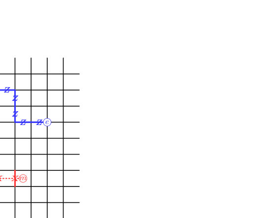
<figcaption class="paper-figure-caption"><b>Fig 1.</b> Figure 1: Anyon excitations in Z2 toric code</figcaption>
</figure>
<figure class="paper-figure-card">
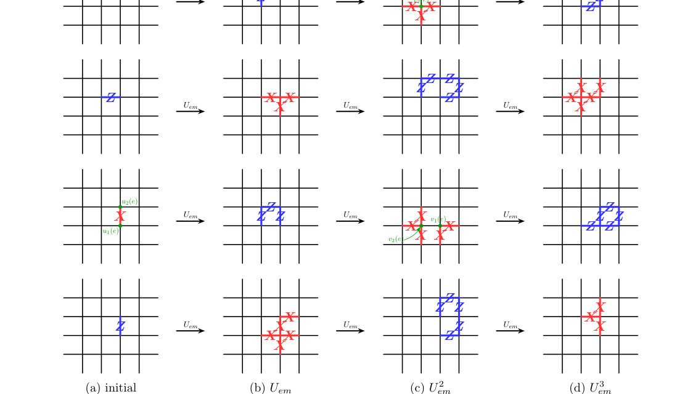
<figcaption class="paper-figure-caption"><b>Fig 2.</b> Figure 2: Conjugation rules for the explicit Z2 exchange Uem. (a)–(d) display the four successive images of single-edge Pauli operators under repeated conjugation by Uem. Red and blue labels denote X- and Z-type factors, respectively.</figcaption>
</figure>
<figure class="paper-figure-card">
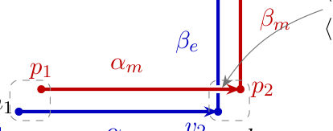
<figcaption class="paper-figure-caption"><b>Fig 3.</b> Figure 3: String geometry used in the proof of Theorem 2. Blue electric strings lie on the direct lattice and red magnetic strings lie on the dual lattice.</figcaption>
</figure>
<figure class="paper-figure-card">
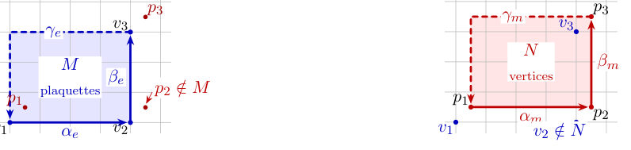
<figcaption class="paper-figure-caption"><b>Fig 4.</b> Figure 4: String geometry used in the proof of Theorem 2. Blue direct-lattice strings are Pauli-Z operators and red dual-lattice strings are Pauli-X operators; arrows give the orientations used for the ZN argument. (a) αm and βe cross once, while αe and βm are disjoint. Dashed closing strings form (b) an electric loop enclosing the plaquette set M with p2 /∈M, and (c) a magnetic loop enclosing the vertex set N with v2 /∈N.</figcaption>
</figure>
<figure class="paper-figure-card">
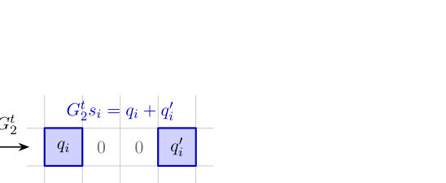
<figcaption class="paper-figure-caption"><b>Fig 5.</b> Figure 5: The edge vector si (left) and the resulting plaquette vector Gt 2si (right).</figcaption>
</figure>
</div>

<p><strong>Summary.</strong> This paper proves that the natural order-two electric-magnetic duality symmetry in the toric code cannot be realized by a simple, local Clifford unitary operation for the $\mathbb{Z}_2$ case. It generalizes this to $\mathbb{Z}_N$ codes, finding that the order-two realization fails for even $N$, demonstrating a deep link between the symmetry's algebraic structure and the underlying lattice topology.</p>
<p><strong>Why it may be interesting.</strong> This work directly addresses the fundamental relationship between abstract topological symmetries (like e-m duality) and their physical realization within quantum error-correcting codes, which is central to quantum computation theory.</p>
<details>
<summary>Detailed structure</summary>
<p><strong>Main problem.</strong> The paper investigates whether the electric-magnetic (e-m) exchange duality, which has order two in the anyon types of the toric code, can be realized microscopically as an order-two Clifford unitary operation.</p>
<p><strong>Main result.</strong> For the $\mathbb{Z}_2$ toric code, no locality-preserving Clifford realization of the e-m exchange can have order two. Furthermore, for the $\mathbb{Z}_N$ code, an order-two realization is only possible for odd $N$.</p>
<p><strong>Method.</strong> The proof uses geometric arguments involving string crossings, relating the unitary operator's action on stabilizers to topological features analogous to a cross-cap.</p>
<p><strong>Model / system.</strong> The study focuses on the $\mathbb{Z}_N$ toric code on a lattice, characterized by vertex and plaquette stabilizers ($A_v$ and $B_p$). The core object of study is the unitary operator $U_{em}$ implementing the e-m exchange.</p>
<p><strong>Key observables.</strong> The order of the unitary operator $U_{em}$ (or its dressed version $W$) acting on the physical Hilbert space, and the commutation relations between local Pauli operators under this transformation.</p>
<p><strong>Important parameters / regimes.</strong> The integer $N$ defining the $\mathbb{Z}_N$ code, and the lattice structure (e.g., $L_x \times L_y$ periodic boundary conditions).</p>
<p><strong>Assumptions / limitations.</strong> The primary theorem assumes locality-preserving realizations of the e-m exchange. The general proof avoids assumptions about translation symmetry or fixed stabilizer pairings.</p>
<p><strong>Figures summary.</strong> Figures illustrate the anyon excitations, the conjugation rules for Pauli operators under $U_{em}$, and the string geometries used in the proof, relating the obstruction to topological crossings.</p>
<p><strong>Paper structure.</strong> The paper first addresses the $\mathbb{Z}_2$ case, proving the order-two impossibility. It then generalizes to $\mathbb{Z}_N$, establishing the odd/even dependence. The methodology involves analyzing the action of the symmetry on stabilizers using Pauli symplectic formalism and geometric string arguments.</p>
</details>
<details>
<summary>Abstract</summary>
<p>Electromagnetic duality in the toric code has order two at the level of anyon types and acts as a Hadamard-type logical transformation on the encoded quantum information. Here, we ask whether it can likewise be realized microscopically as an order-two Clifford operation. For the $\mathbb{Z}_2$ toric code, we prove that any locality-preserving Clifford realization of electric-magnetic exchange cannot have order two. Our proof is fully general and requires neither translation symmetry with restricted families of system sizes nor a fixed pairing between vertex and plaquette stabilizers. Geometrically, the proof locally emulates the unavoidable crossing between electric and magnetic strings, similar to a cross-cap in a non-orientable manifold. Extending the problem to the $\mathbb{Z}_N$ toric code, we find that an order-two Clifford realization exists for odd $N$, whereas it is impossible for even $N$. Our results show that the group law of an emergent electromagnetic duality need not lift faithfully to its microscopic Clifford realization.</p>
</details>
<p><sub><a href="#top">↑ back to top</a></sub></p>

<p><a id="paper-2610.00868"></a></p>
<h3 id="a-quantum-phase-neural-network-with-multi-inputssingle-output"><a href="http://arxiv.org/abs/2610.00868v1">A Quantum Phase Neural Network with Multi-Inputs/Single-Output</a></h3>
<p><strong>Authors:</strong> Shuang Cong, Jinmin Yang, Sajede Harraz<br>
<strong>Type:</strong> both · <strong>Category:</strong> quantum information and computing · <strong>PDF:</strong> <a href="https://arxiv.org/pdf/2610.00868v1">https://arxiv.org/pdf/2610.00868v1</a><br>
<strong>Analysis basis:</strong> full PDF text, analyzed in chunks
<strong>Topic relevance:</strong> <code>quantum measurements</code> <strong>1/5</strong></p>
<div class="figure-strip-hint">↔ Scroll figures horizontally</div>
<div class="paper-figures-scroll">
<figure class="paper-figure-card">
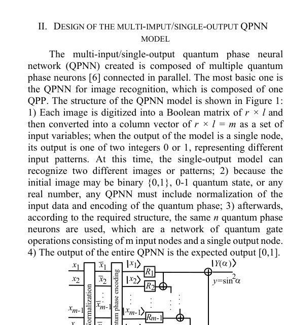
<figcaption class="paper-figure-caption"><b>Fig 1.</b> Fig. 1 Network structure diagram of m-input/single-output QPNN</figcaption>
</figure>
<figure class="paper-figure-card">
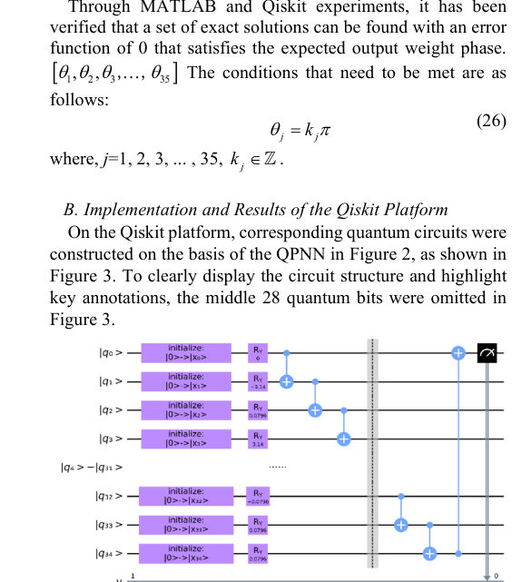
<figcaption class="paper-figure-caption"><b>Fig 2.</b> Fig. 4 Quantum circuit implemented on the Qiskit platform</figcaption>
</figure>
</div>

<p><strong>Summary.</strong> This paper introduces a Quantum Phase Neural Network (QPNN) designed to classify multi-input data, demonstrated using pixel recognition for letters 'A' and 'B'. It overcomes the 'exponential wall' by encoding inputs into quantum phases and deriving the output as a polynomial function of these phases. The methodology is implemented and verified using quantum circuits on the Qiskit platform.</p>
<p><strong>Why it may be interesting.</strong> The work provides a concrete, mathematically derived quantum circuit implementation for a machine learning task, offering a pathway to utilize phase encoding to tackle high-dimensional input data in quantum computation.</p>
<details>
<summary>Detailed structure</summary>
<p><strong>Main problem.</strong> The paper addresses the challenge of implementing multi-input recognition tasks using Quantum Phase Neural Networks (QPNNs) while circumventing the 'exponential wall' problem inherent in standard amplitude encoding.</p>
<p><strong>Main result.</strong> A QPNN structure was successfully proposed and verified on the Qiskit platform to recognize letters 'A' and 'B' by encoding inputs into quantum phases, yielding polynomial output calculations.</p>
<p><strong>Method.</strong> The method involves normalizing pixel inputs, encoding them into quantum phases, and then using a parameterized quantum circuit with controlled NOT gates to sum these phases before measuring the final output probability.</p>
<p><strong>Model / system.</strong> The model is a Quantum Phase Neural Network (QPNN) designed for $m$-input/single-output tasks. It operates on quantum states initialized by the input data and manipulates phases using rotation and controlled gates.</p>
<p><strong>Key observables.</strong> The primary observable is the real output $y \in [0, 1]$, which is derived from the final quantum phase measurement, and the training error function ($e_t^y$).</p>
<p><strong>Important parameters / regimes.</strong> The number of inputs $m=35$ (from $7 	imes 5$ pixels), and the adjustable weight phases ($   heta_j$) within the quantum gates.</p>
<p><strong>Assumptions / limitations.</strong> The core assumption is that the output measurement can be effectively modeled by calculating a polynomial function of the quantum state phase, thereby avoiding the exponential complexity of amplitude measurement.</p>
<p><strong>Figures summary.</strong> Figure 1 shows the general QPNN structure; Figure 2 illustrates the quantum circuit steps (initialization, rotation, controlled gates); Figure 3 shows the specific quantum circuit implemented on Qiskit.</p>
<p><strong>Paper structure.</strong> The paper first proposes the QPNN structure for multi-input encoding. It then derives the mathematical relationship between the input, the adjustable phases, and the output $y$. Subsequently, it derives the gradient-based training algorithm for the weight phases and verifies the entire process using both MATLAB and the Qiskit quantum computing platform.</p>
</details>
<details>
<summary>Abstract</summary>
<p>A 35 input/single output quantum phase neural network (QPNN) is proposed to recognize the English letters' A 'and' B 'composed 7*5 of pixels. Each node of the proposed QPNN has the input with 0 or 1. Through normalization and quantum phase encoding, each set of 35 with 0 or 1 digital inputs is encoded into a quantum superposition state described by 35 quantum phases. Then, a quantum rotation gate is used to introduce adjustable phase, and a controlled NOT gate is used to entangle the relative phase between the two inputs. The relationship between the input and output of the network is derived. This paper also derived the phase weight learning training algorithm with adaptive learning rate. The solutions with the recognition probability of 1 is designed, and the analytical expressions for all adjustable phase solutions with zero errors are not unique. The experimental performance is verified on the Qiskit platform. This paper uses phase drive to convert the probability calculation into an analytical polynomial function with adjustable rotation angles in the network, avoiding the bottleneck of generating all 2^35 complex exponential amplitudes and providing an effective way to solve the "exponential wall" problem, which provides a new implementation solution for the practical application of multi-input recognition problems.</p>
</details>
<p><sub><a href="#top">↑ back to top</a></sub></p>

<p><a id="paper-2610.00478"></a></p>
<h3 id="algebraic-structure-in-holographic-tensor-networks"><a href="http://arxiv.org/abs/2610.00478v1">Algebraic structure in holographic tensor networks</a></h3>
<p><strong>Authors:</strong> Abhisek Sahu, Jeremy van der Heijden, Mark Van Raamsdonk, Rana Zibakhsh<br>
<strong>Type:</strong> theory · <strong>Category:</strong> numerical methods · <strong>PDF:</strong> <a href="https://arxiv.org/pdf/2610.00478v1">https://arxiv.org/pdf/2610.00478v1</a><br>
<strong>Analysis basis:</strong> full PDF text, analyzed in chunks
<strong>Topic relevance:</strong> <code>methods for driven-dissipative</code> <strong>1/5</strong></p>
<div class="figure-strip-hint">↔ Scroll figures horizontally</div>
<div class="paper-figures-scroll">
<figure class="paper-figure-card">
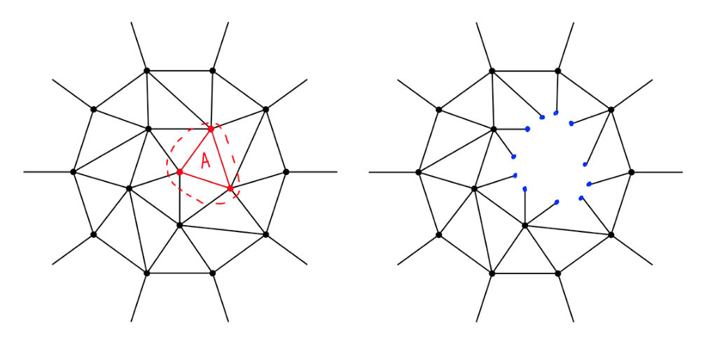
<figcaption class="paper-figure-caption"><b>Fig 1.</b> Figure 1: Left: A tensor network with 10 external legs and a region 𝐴consisting of three vertices and</figcaption>
</figure>
<figure class="paper-figure-card">
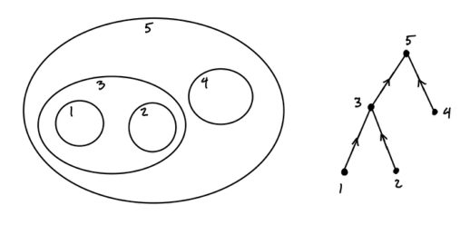
<figcaption class="paper-figure-caption"><b>Fig 2.</b> Figure 2: A collection of sets with a partial order by inclusion, and the corresponding Hasse diagram.</figcaption>
</figure>
<figure class="paper-figure-card">
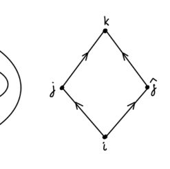
<figcaption class="paper-figure-caption"><b>Fig 3.</b> Figure 3: Sets 𝑗, ˆ𝑗, 𝑖= 𝑗∩ˆ𝑗and 𝑘⊃𝑗, ˆ𝑗with a diamond-shaped Hasse diagram.</figcaption>
</figure>
<figure class="paper-figure-card">

<figcaption class="paper-figure-caption"><b>Fig 4.</b> Figure 4: Hilbert spaces and isometries for a diamond-shaped Hasse diagram. The isometries can be</figcaption>
</figure>
<figure class="paper-figure-card">
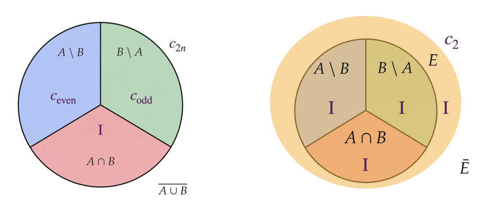
<figcaption class="paper-figure-caption"><b>Fig 5.</b> Figure 5: Dominant permutation configurations in calculating tr[(𝑃𝐴𝑃𝐵)𝑛] for extremal and non-extremal</figcaption>
</figure>
</div>

<p><strong>Summary.</strong> This work explores the deep connection between geometry and algebra in the context of quantum gravity holography using tensor network models. It shows that regions analogous to entanglement wedges correspond to specific subalgebras of observables. By analyzing how algebraic operations mirror geometric ones, the paper provides a concrete, computable test for fundamental principles like strong subadditivity in quantum gravity theories.</p>
<p><strong>Why it may be interesting.</strong> The rigorous mathematical framework connecting geometric concepts from quantum gravity (entanglement wedges) to algebraic structures derived from tensor networks provides a powerful, computable tool for understanding holographic duality.</p>
<details>
<summary>Detailed structure</summary>
<p><strong>Main problem.</strong> The paper investigates the algebraic structure associated with generalized entanglement wedges in quantum gravity, using tensor network models to test fundamental properties like monotonicity and strong subadditivity.</p>
<p><strong>Main result.</strong> The authors establish a correspondence between extremal geometric regions in the tensor network model and canonically associated von Neumann factor subalgebras of the observable algebra in the semiclassical limit.</p>
<p><strong>Method.</strong> The study employs tensor network toy models, analyzing algebraic operations (intersections, joins) on derived subalgebras and comparing the resulting algebraic entropy properties to geometric expectations.</p>
<p><strong>Model / system.</strong> The system is holographic, modeled by random tensor networks whose boundary Hilbert space and observable algebra are analyzed. The core analogy is mapping generalized entanglement wedges (GWs) to specific subalgebras.</p>
<p><strong>Key observables.</strong> Generalized entropy ($S_{	ext{gen}}$), algebraic entropy ($S_{	ext{alg}}$), and the structure of associated von Neumann factor subalgebras ($\mathcal{M}_A$).</p>
<p><strong>Important parameters / regimes.</strong> Large bond dimension (semiclassical limit), bond dimension $D$, and the structure of the tensor network graph.</p>
<p><strong>Assumptions / limitations.</strong> The analysis heavily relies on assuming isometric tensor networks and that the resulting subalgebras are von Neumann factors to simplify the algebraic investigation.</p>
<p><strong>Figures summary.</strong> Not specified.</p>
<p><strong>Paper structure.</strong> The paper proceeds by first establishing the correspondence between GWs and subalgebras, then detailing how algebraic operations map to geometric operations, and finally introducing alternative entropic quantities and methods to define the full Type II1 von Neumann algebra.</p>
</details>
<details>
<summary>Abstract</summary>
<p>In a previous work 2511.21852, we explored the hypothesis that in general theories of quantum gravity, spacetime regions known as generalized entanglement wedges (introduced by Bousso and Penington) have an associated subalgebra of observables in a semiclassical limit. We defined an entropy associated with these subalgebras that obeys the same monotonicity and strong subadditivity properties as the generalized gravitational entropy of generalized entanglement wedges. Here, we test aspects of these ideas making use of tensor network toy models for holography. In this context, the analog of a generalized entanglement wedge is a region for which no region containing it has a smaller number of boundary legs. In the limit of large bond dimension (analogous to the semiclassical limit), we argue that each such region has a canonically associated subalgebra of the full algebra of observables on the boundary Hilbert space, as well as a family of unitarily related von Neumann factor subalgebras. We investigate in detail how various algebraic operations on these subalgebras (e.g. their intersections, joins, and commutants) are related to corresponding geometrical operations on the tensor network regions. We study to what extent the monotonicity and strong subadditivity properties of generalized entropy for generalized entanglement wedges follow from properties of our algebraic entropy. We also introduce an alternative entropic quantity $S(ω|| ω\circ E_{\mathcal{A}'})$ associated with a subalgebra $\mathcal{A}$ that also obeys monotonicity and strong subadditivity properties with suitable conditions. Finally, we explain how to define a type $II_1$ von Neumann algebra based on an infinite family of random tensor networks with increasing bond dimension such that the regions corresponding to generalized entanglement wedges can be associated with exact subalgebras of this full algebra.</p>
</details>
<p><sub><a href="#top">↑ back to top</a></sub></p>

<p><a id="paper-2610.02166"></a></p>
<h3 id="beyond-light-cones-state-preparation-complexity-in-quantum-spin-glasses"><a href="http://arxiv.org/abs/2610.02166v1">Beyond Light Cones: State Preparation Complexity in Quantum Spin Glasses</a></h3>
<p><strong>Authors:</strong> Omar Al-Ghattas, David Gamarnik, Bobak T Kiani<br>
<strong>Type:</strong> theory · <strong>Category:</strong> disordered systems and neural networks · <strong>PDF:</strong> <a href="https://arxiv.org/pdf/2610.02166v1">https://arxiv.org/pdf/2610.02166v1</a><br>
<strong>Analysis basis:</strong> full PDF text, analyzed in chunks
<strong>Topic relevance:</strong> <code>analog quantum simulation</code> <strong>1/5</strong></p>
<div class="figure-strip-hint">↔ Scroll figures horizontally</div>
<div class="paper-figures-scroll">
<figure class="paper-figure-card">
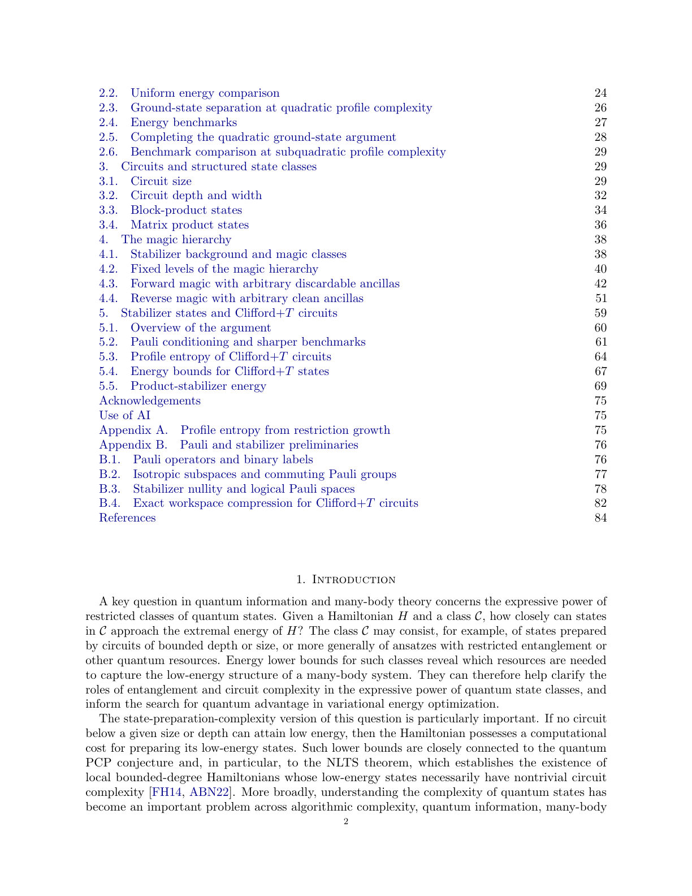
<figcaption class="paper-figure-caption"><b>Fig 1.</b> Low-resolution page preview, page 2</figcaption>
</figure>
<figure class="paper-figure-card">
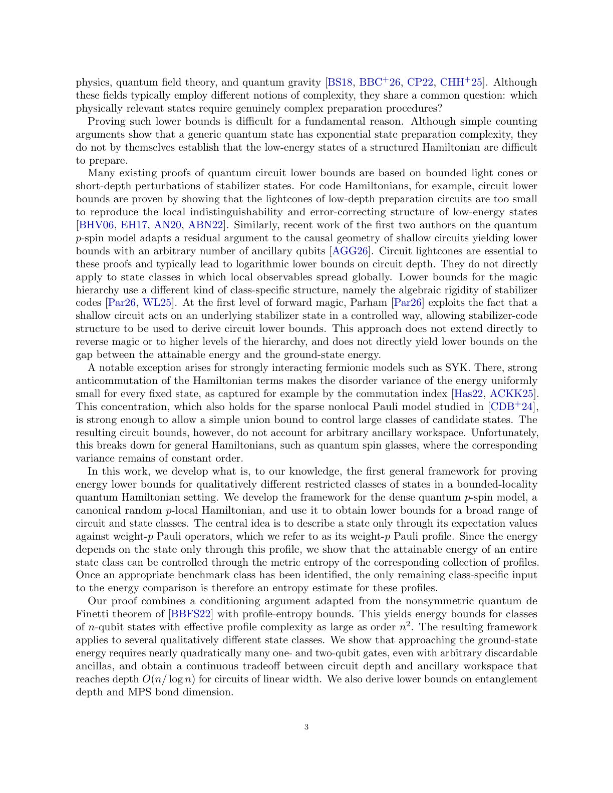
<figcaption class="paper-figure-caption"><b>Fig 2.</b> Low-resolution page preview, page 3</figcaption>
</figure>
<figure class="paper-figure-card">
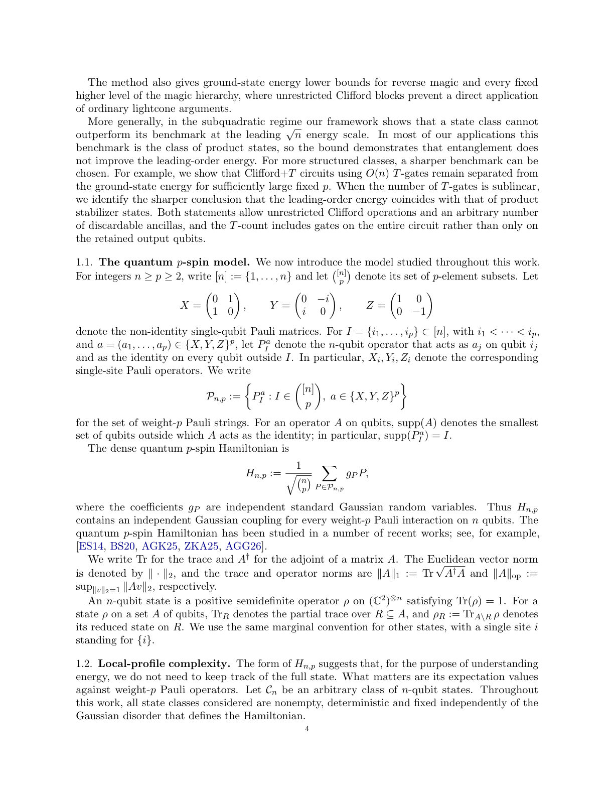
<figcaption class="paper-figure-caption"><b>Fig 3.</b> Low-resolution page preview, page 4</figcaption>
</figure>
<figure class="paper-figure-card">
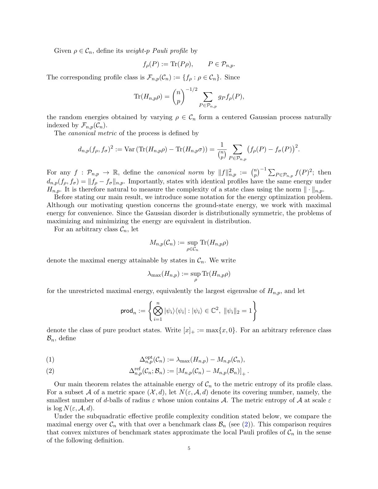
<figcaption class="paper-figure-caption"><b>Fig 4.</b> Low-resolution page preview, page 5</figcaption>
</figure>
<figure class="paper-figure-card">
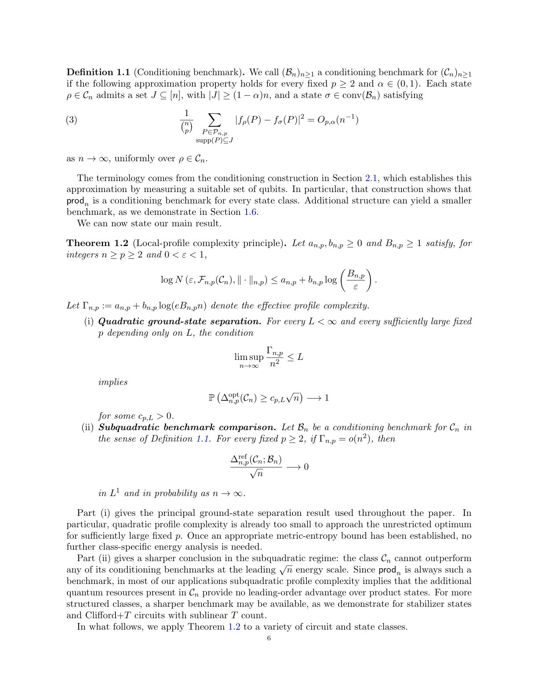
<figcaption class="paper-figure-caption"><b>Fig 5.</b> Low-resolution page preview, page 6</figcaption>
</figure>
</div>

<p><strong>Summary.</strong> This work develops a sophisticated framework to quantify how hard it is to prepare quantum states close to the ground state of quantum spin glasses. By analyzing the 'profile complexity' of the state class, the authors derive lower bounds on the required quantum circuit resources, showing that simple local constraints are insufficient to capture the true preparation difficulty.</p>
<p><strong>Why it may be interesting.</strong> The techniques developed—using profile complexity and metric entropy to bound energy gaps—provide powerful, non-local tools for characterizing the computational difficulty of preparing ground states in complex, disordered quantum systems.</p>
<details>
<summary>Detailed structure</summary>
<p><strong>Main problem.</strong> The paper studies the state preparation complexity of quantum states in dense quantum $p$-spin Hamiltonians, aiming to derive energy lower bounds that surpass those based solely on circuit lightcones.</p>
<p><strong>Main result.</strong> It establishes that attaining near-ground-state energy requires $\Omega(n^2 / \log n)$ one- and two-qubit gates, and provides lower bounds for various circuit resource trade-offs.</p>
<p><strong>Method.</strong> The core method involves using the effective profile complexity, derived from the metric entropy of Pauli profiles, combined with an adaptation of a nonsymmetric quantum de Finetti theorem.</p>
<p><strong>Model / system.</strong> The focus is on dense quantum $p$-spin Hamiltonians acting on $n$ qubits, which model quantum spin glasses. The analysis compares the energy achievable by a restricted state class to a benchmark class.</p>
<p><strong>Key observables.</strong> Profile complexity, ground-state energy separation ($\Delta$), circuit gate counts (one- and two-qubit gates), entanglement depth, and MPS bond dimension.</p>
<p><strong>Important parameters / regimes.</strong> The fixed parameter $p$ (number of qubits involved in interactions), the system size $n$, and the profile complexity regime (e.g., subquadratic vs. quadratic).</p>
<p><strong>Assumptions / limitations.</strong> The analysis assumes the existence of a suitable benchmark class $   ext{Bn}$ and relies on adapting advanced theorems like the nonsymmetric quantum de Finetti theorem.</p>
<p><strong>Paper structure.</strong> The paper introduces the profile complexity principle, applies it to various structured state classes (including those related to the magic hierarchy), and derives quantitative bounds on resource requirements.</p>
</details>
<details>
<summary>Abstract</summary>
<p>We introduce a method for studying state preparation complexity in dense quantum $p$-spin Hamiltonians on $n$ qubits, going beyond bounds based only on circuit lightcones. The key input is the class's effective profile complexity, which is derived from the metric entropy of its Pauli profiles. These profiles record expectations of all Pauli operators supported on exactly $p$ qubits. Classes with uniformly bounded quadratic effective profile complexity remain separated from the ground-state energy by a positive multiple of $\sqrt n$ for sufficiently large fixed $p$. At subquadratic effective profile complexity, the class cannot outperform a suitable benchmark class at leading order, with product states providing a universal benchmark. The proof combines an adaptation of a nonsymmetric quantum de Finetti theorem of Berta et al. (arXiv:1810.12197) with Gaussian process entropy bounds.   Applying this framework, we show that attaining near-ground-state energy requires $Ω(n^2/\log n)$ one- and two-qubit gates, even with arbitrary discardable ancillas. We also obtain depth-width tradeoffs, entanglement-depth and matrix product state bond-dimension lower bounds, and obstructions for both orientations at every fixed level of Parham's magic hierarchy (arXiv:2504.19966), with total circuit width $O(n)$. In first-level reverse magic, a shallow circuit is followed by an unrestricted Clifford circuit. The latter can spread local observables across the system, preventing a direct application of small-lightcone bounds. For this first-level class, our bounds also allow arbitrarily many clean ancillas at fixed shallow-circuit depth. A sharper benchmark shows that Clifford+$T$ circuits with $o(n)$ $T$-gates have no leading-order energy advantage over product stabilizer states, even with unrestricted Clifford operations and arbitrary discardable ancillas.</p>
</details>
<p><sub><a href="#top">↑ back to top</a></sub></p>

<p><a id="paper-2610.00494"></a></p>
<h3 id="causal-trade-offs-in-superluminal-extensions-of-relativity-a-no-go-theorem"><a href="http://arxiv.org/abs/2610.00494v1">Causal Trade-Offs in Superluminal Extensions of Relativity. A no-go theorem</a></h3>
<p><strong>Authors:</strong> Amrapali Sen, Matthias Salzger, V. Vilasini<br>
<strong>Type:</strong> theory · <strong>Category:</strong> other · <strong>PDF:</strong> <a href="https://arxiv.org/pdf/2610.00494v1">https://arxiv.org/pdf/2610.00494v1</a><br>
<strong>Analysis basis:</strong> full PDF text, analyzed in chunks
<strong>Topic relevance:</strong> <code>quantum measurements</code> <strong>1/5</strong></p>
<div class="figure-strip-hint">↔ Scroll figures horizontally</div>
<div class="paper-figures-scroll">
<figure class="paper-figure-card">
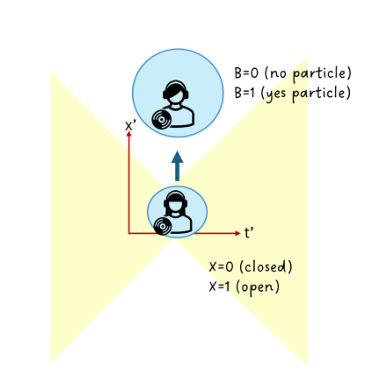
<figcaption class="paper-figure-caption"><b>Fig 1.</b> Figure 1: Communication protocol. The coordinates in black represent our frame, while the coordinates in red represent a superluminally boosted reference frame (of let’s say Charlie) with respect to us.</figcaption>
</figure>
<figure class="paper-figure-card">
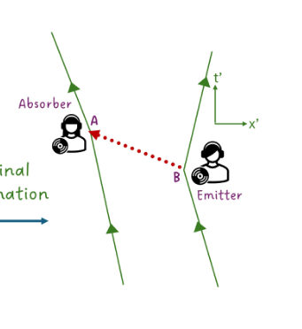
<figcaption class="paper-figure-caption"><b>Fig 2.</b> Figure 2: A tachyon is sent from Alice to Bob. Dragan and Ekert [1] argue that for this to be consistent with relativity, no local-deterministic model of the tachyon’s emission is available on the absorber’s, i.e., Bob’s side. Under a subluminal Lorentz boost, the roles of emitter and absorber change. Thus, by (relativistic) symmetry, they argue there can be no local-deterministic model on Alice’s side either.</figcaption>
</figure>
<figure class="paper-figure-card">

<figcaption class="paper-figure-caption"><b>Fig 3.</b> Figure 3: Claim A and claim B applied to our communication protocol. The coordinates in black represent our frame, while the coordinates in red represent a superluminally boosted reference frame (of let’s say Charlie) with respect to us.</figcaption>
</figure>
</div>

<p><strong>Summary.</strong> This paper develops a formal causal framework to study superluminal extensions of relativity, culminating in a no-go theorem. It demonstrates that maintaining causality and operational consistency in such theories forces a choice among several fundamental assumptions, showing that simple objective uncertainty is not enough to resolve the conflict. The work clarifies the deep causal trade-offs inherent in modifying the structure of spacetime causality.</p>
<p><strong>Why it may be interesting.</strong> While focused on relativity, the rigorous framework for testing the consistency of fundamental assumptions (like locality or observer independence) is a powerful tool applicable to analyzing constraints in quantum field theories or quantum gravity models.</p>
<details>
<summary>Detailed structure</summary>
<p><strong>Main problem.</strong> The paper investigates the causal implications of extending relativity to include superluminal reference frames (SpTs) and seeks to prove a no-go theorem regarding the avoidance of superluminal signaling.</p>
<p><strong>Main result.</strong> The authors prove that avoiding superluminal signaling requires abandoning at least one of several fundamental assumptions regarding operational accessibility, frame-independence, or free choice, showing that objective uncertainty alone is insufficient.</p>
<p><strong>Method.</strong> They develop a formal causal modelling framework, generalizing affects theory, to analyze the compatibility of operational assumptions (A0-A4) under superluminal transformations.</p>
<p><strong>Model / system.</strong> The analysis uses abstract communication protocols involving particle emission and absorption between two parties, comparing results across standard and superluminal reference frames.</p>
<p><strong>Key observables.</strong> Operational correlations between spacelike-separated regions, causal ordering of events, and the existence of free variables.</p>
<p><strong>Important parameters / regimes.</strong> The nature of the superluminal boost, the size of the operational laboratory regions ($\Delta x, \Delta t$), and the degree of required uncertainty.</p>
<p><strong>Assumptions / limitations.</strong> The core assumptions tested include operational correlation (A0), preservation of causal ordering (A1), prohibition of superluminal signaling (A2), invariance of probabilities (A3), and invariance of free variables (A4).</p>
<p><strong>Figures summary.</strong> Figure 1 illustrates the communication protocol setup in different frames; Figure 2 compares local deterministic descriptions in different frames; Figure 3 applies the analysis to the communication protocol.</p>
<p><strong>Paper structure.</strong> The paper systematically tests the mutual consistency of five key assumptions (A0-A4) within the causal modelling framework, leading to the identification of necessary trade-offs.</p>
</details>
<details>
<summary>Abstract</summary>
<p>Extensions of relativity that include superluminal reference frames have recently been proposed by Dragan and Ekert as a way to reconcile relativistic symmetry with quantum uncertainty. In this work, we develop a causal modelling framework to formally study this proposal and prove a no-go theorem demonstrating that a theory permitting superluminal reference frames can avoid superluminal signalling only if it severely constrains which spacetime regions are accessible to operational protocols, if the choice of reference frame has observable consequences or if free variables do not exist or their existence depends on the reference frame. Crucially, our result goes beyond the familiar intuition that superluminal transformations may lead to superluminal signalling; our no-go result shows that Dragan and Ekert's proposal of introducing objective uncertainty does not, by itself, eliminate this conflict. In fact, because superluminal signalling might instead be avoided by relaxing other fundamental assumptions in the presence of superluminal reference frames, the proposed objective uncertainty may not be necessary at all. Our results clarify the limitations of uncertainty-based resolutions and the causal trade-offs faced by superluminal extensions of relativity.</p>
</details>
<p><sub><a href="#top">↑ back to top</a></sub></p>

<p><a id="paper-2610.00579"></a></p>
<h3 id="characterizing-unitaries-via-quasi-process-functions"><a href="http://arxiv.org/abs/2610.00579v1">Characterizing unitaries via quasi-process functions</a></h3>
<p><strong>Authors:</strong> Nasra Daher Ahmed, Ravi Kunjwal<br>
<strong>Type:</strong> theory · <strong>Category:</strong> quantum information and computing · <strong>PDF:</strong> <a href="https://arxiv.org/pdf/2610.00579v1">https://arxiv.org/pdf/2610.00579v1</a><br>
<strong>Analysis basis:</strong> full PDF text, analyzed in chunks
<strong>Topic relevance:</strong> <code>quantum measurements</code> <strong>1/5</strong></p>
<div class="figure-strip-hint">↔ Scroll figures horizontally</div>
<div class="paper-figures-scroll">
<figure class="paper-figure-card">
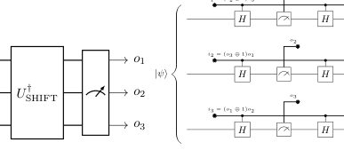
<figcaption class="paper-figure-caption"><b>Fig 1.</b> FIG. 2: Two protocols for the perfect discrimination of the states in the SHIFT basis. U † SHIFT is the unitary that rotates the SHIFT basis to the computational basis.</figcaption>
</figure>
<figure class="paper-figure-card">
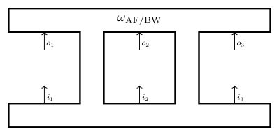
<figcaption class="paper-figure-caption"><b>Fig 2.</b> FIG. 1: AF/BW process function [3]: Each party k ∈{1, 2, 3} receives an input ik ∈{0, 1} and sends an output ok ∈{0, 1}. The process function wires the outputs to the inputs, allowing the parties to communicate according to Eq. (2).</figcaption>
</figure>
<figure class="paper-figure-card">
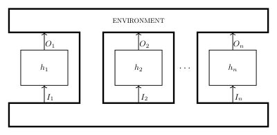
<figcaption class="paper-figure-caption"><b>Fig 3.</b> FIG. 5: General classical process composed with local interventions, e.g., as in Eq. (4).</figcaption>
</figure>
<figure class="paper-figure-card">
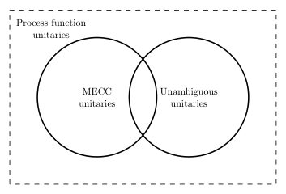
<figcaption class="paper-figure-caption"><b>Fig 4.</b> FIG. 4: Relationship between MECC, unambiguous, and process function unitaries.</figcaption>
</figure>
<figure class="paper-figure-card">
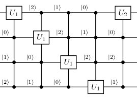
<figcaption class="paper-figure-caption"><b>Fig 5.</b> FIG. 8: 4-party genuinely multipartite MECC unitary circuit with 5 controlled unitaries.</figcaption>
</figure>
</div>

<p><strong>Summary.</strong> This paper develops a novel framework to characterize n-qubit unitaries using quasi-process functions (qPFUs), linking quantum computation structure to concepts from causal order. It establishes that while all unitaries fit this representation, specific criteria (MECC and Unambiguity) define special, physically significant subclasses of unitaries. This provides a versatile tool for analyzing quantum circuits based on causality constraints.</p>
<p><strong>Why it may be interesting.</strong> The connection drawn between quantum causality (process functions/causal order) and the mathematical structure of quantum gates (unitaries) provides a powerful, general tool for analyzing quantum circuits beyond standard entanglement measures.</p>
<details>
<summary>Detailed structure</summary>
<p><strong>Main problem.</strong> The paper aims to characterize general n-qubit unitaries using a novel representation based on quasi-process functions (qPFUs). It seeks to establish necessary and sufficient conditions for a unitary to be a Process Function Unitary (PFU).</p>
<p><strong>Main result.</strong> All n-qubit unitaries can be represented as qPFUs. Two sufficient but not necessary criteria, Mutual Exclusivity of Control Conditions (MECC) and Unambiguity, were derived for a unitary to be a PFU.</p>
<p><strong>Method.</strong> The authors utilize the decomposition of unitaries into controlled single-qubit unitaries, linking the control structure to quasi-process functions. They derive mathematical criteria (MECC, Unambiguity) and use algebraic techniques involving Choi-Jamiołkowski operators to prove purification theorems.</p>
<p><strong>Model / system.</strong> The study focuses on n-qubit quantum systems and the structure of unitary operators ($U$). The mathematical framework involves quasi-process functions ($\omega$), process functions (modeling classical causal loops), and the analysis of Quantum Nonlocality Without Entanglement (QNLWE).</p>
<p><strong>Key observables.</strong> The primary observables are the unitaries themselves, and diagnostics include the MECC property, the Unambiguity property, and the resulting unitary purification of the associated process function.</p>
<p><strong>Important parameters / regimes.</strong> The number of qubits ($n$) is a key parameter, as the results scale with the complexity of the n-partite system.</p>
<p><strong>Assumptions / limitations.</strong> The criteria MECC and Unambiguity are shown to be sufficient but not necessary for a unitary to be a PFU. The paper also conjectures that any process function can be purified to a unitary process.</p>
<p><strong>Figures summary.</strong> Figures illustrate the conceptual link between QNLWE, Process functions, and Unitaries via the qPFU representation. Specific figures show the structure of process functions (like AF/BW) and the circuit diagrams for related unitaries (e.g., SHIFT, Domino).</p>
<p><strong>Paper structure.</strong> The paper first establishes the qPFU representation for all unitaries. It then introduces the concepts of PFU, MECC, and Unambiguity, deriving criteria for a unitary to be a PFU. Subsequent sections prove that MECC unitaries admit a unitary purification of the associated process function, and finally, they analyze the circuit depth of MECC unitaries using graph theory.</p>
</details>
<details>
<summary>Abstract</summary>
<p>It is well-known that every n-qubit unitary can be decomposed into a product of controlled single-qubit unitaries. We show that the control conditions in such a decomposition naturally define a quasi-process function, an object that originally came up in the study of indefinite causal order. Here quasi-process functions yield a representation of every n-qubit unitary in a canonical form, namely, as a quasi-process function unitary (qPFU). We use this representation to show how quantum nonlocality without entanglement (QNLWE) can be understood in terms of unitaries that encode the trade-off between causal order and locality noted in R. Kunjwal and Ä. Baumeler, arXiv:2202.00440. Specifically, we obtain two sufficient (but not necessary) criteria---mutual exclusivity of control conditions (MECC) and Unambiguity---for a unitary to be a process function unitary (PFU), i.e., it admits a qPFU representation where the quasi-process function is a process function, an object that can model paradox-free classical causal loops. We also show the inequivalence of these criteria, neither implying the other. We then show that the circuit depth of MECC unitaries admits a characterization in terms of clique-partitioning problems on Hamming graphs and use this correspondence to provide bounds on the circuit depth of n-qubit MECC unitaries. Finally, we show how MECC unitaries provide a recipe for constructing a unitary purification of the associated process function, thereby providing a large class of unitary processes of interest in quantum causality. The generality of this causality-inspired representation of unitaries makes it a versatile tool for analyzing the structure of quantum circuits in other domains.</p>
</details>
<p><sub><a href="#top">↑ back to top</a></sub></p>

<p><a id="paper-2610.01176"></a></p>
<h3 id="dynamical-critical-properties-of-the-random-bond-three-state-potts-model"><a href="http://arxiv.org/abs/2610.01176v1">Dynamical Critical Properties of the Random-Bond three-state Potts Model</a></h3>
<p><strong>Authors:</strong> Zeynep Demir Vatansever, Ulvi Kanbur, Mohammed Sadra Najafi, Muktish Acharyya, Erol Vatansever<br>
<strong>Type:</strong> both · <strong>Category:</strong> statistical mechanics · <strong>PDF:</strong> <a href="https://arxiv.org/pdf/2610.01176v1">https://arxiv.org/pdf/2610.01176v1</a><br>
<strong>Analysis basis:</strong> full PDF text, analyzed in chunks
<strong>Topic relevance:</strong> <code>non-equilibrium universality</code> <strong>1/5</strong></p>
<div class="figure-strip-hint">↔ Scroll figures horizontally</div>
<div class="paper-figures-scroll">
<figure class="paper-figure-card">
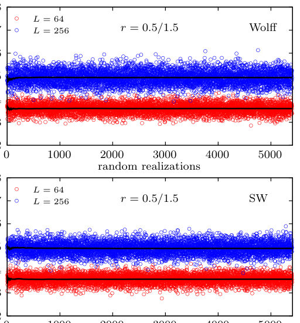
<figcaption class="paper-figure-caption"><b>Fig 1.</b> FIG. 1: Running averages of the specific heat C as a function of the number of random-bond</figcaption>
</figure>
<figure class="paper-figure-card">
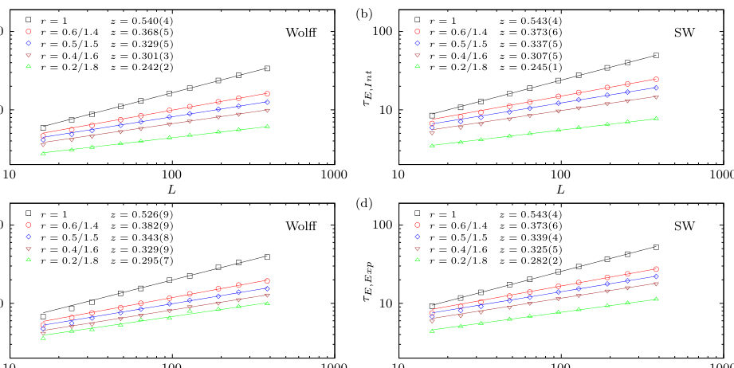
<figcaption class="paper-figure-caption"><b>Fig 2.</b> FIG. 2: Log-log plots of the integrated and exponential autocorrelation times of the energy, τE,int</figcaption>
</figure>
<figure class="paper-figure-card">

<figcaption class="paper-figure-caption"><b>Fig 3.</b> FIG. 3: The difference z(1)−z(r) as a function of the bond-randomness strength r for the (a) Wolff</figcaption>
</figure>
<figure class="paper-figure-card">

<figcaption class="paper-figure-caption"><b>Fig 4.</b> FIG. 4: Square root of the relative variance of the specific heat, shown as √RC, as a function of</figcaption>
</figure>
<figure class="paper-figure-card">

<figcaption class="paper-figure-caption"><b>Fig 5.</b> FIG. 5: Square root of the relative variance of the integrated energy autocorrelation time, pRτE,int,</figcaption>
</figure>
</div>

<p><strong>Summary.</strong> This work analyzes the critical dynamics of the random-bond three-state Potts model using advanced Monte Carlo simulations. The key finding is that bond randomness substantially weakens critical slowing down, changing the dynamic exponent. Crucially, this dynamic change occurs without altering the underlying static universality class of the model.</p>
<p><strong>Why it may be interesting.</strong> The findings on how quenched disorder modifies dynamic scaling exponents while preserving static universality provide valuable insights into the interplay between disorder and critical phenomena, relevant for understanding complex many-body systems.</p>
<details>
<summary>Detailed structure</summary>
<p><strong>Main problem.</strong> The study investigates the dynamic critical behavior and the influence of bond randomness on the critical slowing down of the two-dimensional three-state Potts model.</p>
<p><strong>Main result.</strong> Bond randomness significantly weakens critical slowing down, decreasing the dynamic exponent from $z \approx 0.54$ (pure) to $z \approx 0.24$ (strong disorder), while preserving the static universality class ($\gamma/
u \approx 1.73$).</p>
<p><strong>Method.</strong> Large-scale Monte Carlo simulations utilizing Wolff and Swendsen-Wang cluster algorithms were employed to calculate time autocorrelation functions and perform finite-size scaling analyses.</p>
<p><strong>Model / system.</strong> The system is the two-dimensional random-bond three-state Potts model, described by a Hamiltonian with random ferromagnetic interactions $J_{ij}$ drawn from a bimodal distribution.</p>
<p><strong>Key observables.</strong> Dynamic critical exponent ($z$), integrated and exponential autocorrelation times ($  au_{A,int},     au_{A,exp}$), and the ratio of static exponents ($\gamma/
u$).</p>
<p><strong>Important parameters / regimes.</strong> Disorder strength ($r = J_2/J_1$), system size ($L$), and the critical temperature ($T_c$).</p>
<p><strong>Assumptions / limitations.</strong> The analysis assumes the validity of the cluster algorithms and relies on finite-size scaling theory to extract critical exponents.</p>
<p><strong>Figures summary.</strong> Figures illustrate the systematic decrease of autocorrelation times with increasing disorder, the non-vanishing variance of static observables (specific heat), and the consistency of the exponent ratio $\gamma/
u$ across different disorder strengths.</p>
<p><strong>Paper structure.</strong> The paper systematically analyzes the dynamic critical slowing down by calculating autocorrelation times for various disorder strengths, confirming the weakening of dynamics while verifying the robustness of the static critical exponents.</p>
</details>
<details>
<summary>Abstract</summary>
<p>We study the dynamic critical behavior of the two-dimensional random-bond three-state Potts model using large-scale Monte Carlo simulations with the Wolff and Swendsen--Wang cluster algorithms. At the disorder-dependent critical temperature, we compute integrated and exponential autocorrelation times and extract the dynamic critical exponent $z$ via finite-size scaling. Critical slowing down is significantly weakened by bond randomness, with the dynamic exponent decreasing from $z \approx 0.54$ in the pure system to $z \approx 0.24$ at strong disorder. From the finite-size scaling of the Wolff cluster size, we obtain $γ/ν\approx 1.73$, where $γ$ and $ν$ are the susceptibility and correlation-length exponents, respectively, consistent with the universality class of the two-dimensional three-state Potts model. These results indicate that bond randomness strongly affects the critical dynamics but leaves the underlying static universality class unchanged. Furthermore, both static and dynamic observables, including the specific heat and the autocorrelation times, show a lack of self-averaging.</p>
</details>
<p><sub><a href="#top">↑ back to top</a></sub></p>

<p><a id="paper-2610.01979"></a></p>
<h3 id="fully-tolerant-product-state-testing-and-closest-product-state-learning"><a href="http://arxiv.org/abs/2610.01979v1">Fully tolerant product state testing and closest product state learning</a></h3>
<p><strong>Authors:</strong> Zongbo Bao, Jonas Helsen, Tuyen Nguyen<br>
<strong>Type:</strong> theory · <strong>Category:</strong> quantum information and computing · <strong>PDF:</strong> <a href="https://arxiv.org/pdf/2610.01979v1">https://arxiv.org/pdf/2610.01979v1</a><br>
<strong>Analysis basis:</strong> full PDF text, analyzed in chunks
<strong>Topic relevance:</strong> <code>quantum measurements</code> <strong>1/5</strong></p>
<div class="figure-strip-hint">↔ Scroll figures horizontally</div>
<div class="paper-figures-scroll">
<figure class="paper-figure-card">

<figcaption class="paper-figure-caption"><b>Fig 1.</b> Low-resolution page preview, page 2</figcaption>
</figure>
<figure class="paper-figure-card">

<figcaption class="paper-figure-caption"><b>Fig 2.</b> Low-resolution page preview, page 3</figcaption>
</figure>
<figure class="paper-figure-card">

<figcaption class="paper-figure-caption"><b>Fig 3.</b> Low-resolution page preview, page 4</figcaption>
</figure>
<figure class="paper-figure-card">

<figcaption class="paper-figure-caption"><b>Fig 4.</b> Low-resolution page preview, page 5</figcaption>
</figure>
<figure class="paper-figure-card">

<figcaption class="paper-figure-caption"><b>Fig 5.</b> Low-resolution page preview, page 6</figcaption>
</figure>
</div>

<p><strong>Summary.</strong> This paper develops advanced, fully tolerant algorithms for both testing and learning the closest product state for an unknown quantum state on $n$ qudits. By combining random coloring with spectral projection, the authors achieve sample complexities that are highly efficient, particularly for the learning task. This work provides theoretical tools essential for verifying the product nature of quantum states in large, multi-partite systems.</p>
<p><strong>Why it may be interesting.</strong> The development of robust, scalable quantum state certification and reconstruction tools is crucial for verifying quantum hardware and understanding entanglement structure in complex quantum systems.</p>
<details>
<summary>Detailed structure</summary>
<p><strong>Main problem.</strong> The paper addresses the fundamental problem of determining if an unknown quantum state is close to a product state (testing) and, if not, learning the closest product state (learning).</p>
<p><strong>Main result.</strong> They provide efficient, fully tolerant algorithms for both testing and learning, showing that the sample complexity for learning is $\widetilde{O}ig((nd)^2ig)\, 2^{\widetilde{O}(1/\varepsilon^8)}$.</p>
<p><strong>Method.</strong> The techniques combine a random coloring argument with blockwise spectral projection to reduce the problem to testing/learning over smaller, manageable blocks. The learning component adapts high-fidelity product state learning algorithms for qudits.</p>
<p><strong>Model / system.</strong> The system involves unknown quantum states $
ho$ acting on $n$ qudits, where $d$ is the local dimension. The focus is on characterizing the deviation of $
ho$ from a product state $|\psi_1
angle \otimes \cdots \otimes |\psi_n
angle$.</p>
<p><strong>Key observables.</strong> Product Fidelity ($F_{	ext{prod}}(
ho)$), state overlap, and the acceptance probability of the $k$-copy test ($Z_k(
ho)$).</p>
<p><strong>Important parameters / regimes.</strong> Number of parties ($n$), local dimension ($d$), testing thresholds ($a, b$), and learning accuracy ($\epsilon$).</p>
<p><strong>Assumptions / limitations.</strong> The analysis relies heavily on the random coloring argument and the use of blockwise spectral projection to control error accumulation across partitions.</p>
<p><strong>Paper structure.</strong> The paper first tackles the testing problem using random coloring and spectral projection to achieve a constant-sample test. It then extends these techniques to develop a fully tolerant, agnostic learning algorithm, adapting prior work for qudit systems.</p>
</details>
<details>
<summary>Abstract</summary>
<p>We address the problem of testing whether an unknown $n$-qudit state $ρ$ is $a$-close to a product state or $b$-far away from any product state, as measured in terms of state overlap. We provide a time-efficient algorithm to solve this problem that requires an $n$-independent number of copies of the unknown state. Our random coloring argument shows that for any unknown state there always exists a partition of $[n]$ into $q$ parts such that the square of the overlap with the closest product state with respect to this partition is only an additive factor $O(1/q)$ larger. This reduces the problem to tolerant testing of $q$ parties, with potentially growing local dimensions. Combining this insight with blockwise spectral projection arguments we can show that the natural $k$-copy generalization of Harrow &amp; Montanaro's product state test provides an efficient tolerant tester.   We use the same random coloring and blockwise spectral projection techniques to obtain a substantially improved algorithm for closest product state learning. In particular we give an algorithm that takes in $\widetilde{O}\big((nd)^2\big)\, 2^{\widetilde{O}(1/\varepsilon^8)}$ copies of the unknown state and produces an $\varepsilon$-approximately optimal product state. The key technical components of this learner are a qudit variant of the Bakshi et al. high-fidelity product state learning algorithm and a sampling technique based on Werner's optimal cloning channel.</p>
</details>
<p><sub><a href="#top">↑ back to top</a></sub></p>

<p><a id="paper-2610.00504"></a></p>
<h3 id="graph-neural-post-selection-for-quantum-error-correction"><a href="http://arxiv.org/abs/2610.00504v1">Graph Neural Post-selection for Quantum Error Correction</a></h3>
<p><strong>Authors:</strong> Conor Carty, Tamas Noszko, Joschka Roffe, Roberto Bondesan<br>
<strong>Type:</strong> theory · <strong>Category:</strong> quantum information and computing · <strong>PDF:</strong> <a href="https://arxiv.org/pdf/2610.00504v1">https://arxiv.org/pdf/2610.00504v1</a><br>
<strong>Analysis basis:</strong> full PDF text, analyzed in chunks
<strong>Topic relevance:</strong> <code>quantum measurements</code> <strong>1/5</strong></p>
<div class="figure-strip-hint">↔ Scroll figures horizontally</div>
<div class="paper-figures-scroll">
<figure class="paper-figure-card">

<figcaption class="paper-figure-caption"><b>Fig 1.</b> FIG. 1. Neural post-selection on the [[72, 12, 6]] bivariate bi- cycle code under uniform depolarising circuit-level noise at a physical error rate p = 0.001, contrasted with popular benchmarks for quantum low-density parity-check code post- selection: Q(2) LLR [11] and the three-round logical-error crite- rion (3R-LEC) [12]. LER per-cycle is defined as 1 −(1 − LER) 1 T , for T cycles.</figcaption>
</figure>
<figure class="paper-figure-card">

<figcaption class="paper-figure-caption"><b>Fig 2.</b> FIG. 2. Factor-graph MPNN (FMPNN). (a) Detector and fault nodes carry syndrome, circuit and belief-propagation features. (b) Message passing combines local and global context. (c) Fault embeddings are pooled over their logical supports; overlapping supports can share nodes (highlighted). A shared multilayer perceptron produces per-observable logits, which are used to produce the final confidence score.</figcaption>
</figure>
<figure class="paper-figure-card">

<figcaption class="paper-figure-caption"><b>Fig 3.</b> FIG. 3. Surface-code MPNN. (a) Detector graph labelled by the syndrome. (b) Message passing combines local and global context. (c) Attention pooling and a multilayer perceptron produce a confidence score from the final embeddings of the detectors.</figcaption>
</figure>
<figure class="paper-figure-card">

<figcaption class="paper-figure-caption"><b>Fig 4.</b> FIG. 4. Post-selected logical error rate against rejection rate for the (a) [[72, 12, 6]] and (b) [[144, 12, 12]] bivariate bicycle codes under uniform depolarising circuit-level noise at physical error rates p = 0.001 and p = 0.003 respectively.</figcaption>
</figure>
<figure class="paper-figure-card">

<figcaption class="paper-figure-caption"><b>Fig 5.</b> FIG. 5. Post-selected logical error rate against rejection rate for the rotated surface codes under uniform depolarising circuit- level noise at distances 5, 7, 9 and physical noise p = 0.001 and p = 0.003. Each (d, p) configuration uses a separately fine-tuned MPNN; see Appendix A 5 b.</figcaption>
</figure>
</div>

<p><strong>Summary.</strong> This paper introduces graph neural networks to enhance quantum error correction by implementing intelligent post-selection. The GNNs predict whether a quantum computation shot will fail based only on syndrome measurements, avoiding full decoding. This results in massive reductions in logical error rates for surface and qLDPC codes, significantly boosting the practical viability of fault-tolerant quantum computation.</p>
<p><strong>Why it may be interesting.</strong> This work directly tackles the resource overhead problem in fault-tolerant quantum computing by proposing machine learning methods to filter out low-quality computations before expensive decoding steps.</p>
<details>
<summary>Detailed structure</summary>
<p><strong>Main problem.</strong> The paper addresses the challenge of improving the logical reliability of quantum computation by implementing post-selection techniques to reject noisy computational shots.</p>
<p><strong>Main result.</strong> The proposed graph neural network post-selectors achieve substantial logical error rate suppression (e.g., 3700x reduction for one code) while maintaining a reasonable yield compared to existing methods.</p>
<p><strong>Method.</strong> The core method involves training Graph Neural Networks (GNNs)—specifically MPNN and FMPNN—to classify syndrome measurements as either successful or likely to fail, thereby guiding post-selection.</p>
<p><strong>Model / system.</strong> The work analyzes Quantum Error Correction (QEC) codes, including rotated surface codes and high-rate qLDPC codes (like BB codes), operating under depolarizing circuit-level noise.</p>
<p><strong>Key observables.</strong> Logical Error Rate (LER), Yield (fraction of accepted shots), and the syndrome vector ($\sigma$).</p>
<p><strong>Important parameters / regimes.</strong> Physical error rates ($p$), code distances ($d$), and the rejection threshold ($  au$).</p>
<p><strong>Assumptions / limitations.</strong> The models are trained on online circuit-noise samples, and the performance relies on the assumption that the GNN can accurately predict failure without full decoder execution.</p>
<p><strong>Figures summary.</strong> Figures compare the performance of neural post-selection against established methods like $Q(2)$ LLR and 3R-LEC for various code types and noise levels.</p>
<p><strong>Paper structure.</strong> The paper introduces the problem, details the two main GNN architectures (MPNN for surface codes, FMPNN for qLDPC), describes the training process using various loss functions and objectives, and concludes with performance comparisons across different code families.</p>
</details>
<details>
<summary>Abstract</summary>
<p>Post-selection improves the logical reliability of quantum computation by rejecting shots which are likely to result in logical failure. We introduce graph neural networks that predict decoder failure without additional decoder executions, using only syndromes, and for high-rate quantum low-density parity-check (qLDPC) codes, existing belief-propagation posteriors. We evaluate rotated surface and bivariate bicycle (BB) code memories under uniform depolarising circuit-level noise. Retaining 90% of shots gives approximately 3700x and 740x reductions in logical error rates for [[72,12,6]] and [[144,12,12]] BB codes at realistic physical error rates. For the distance 5 surface code at physical noise p=0.003, our neural post-selector achieves logical error suppression comparable to the leading complementary gap method without running the decoder.</p>
</details>
<p><sub><a href="#top">↑ back to top</a></sub></p>

<p><a id="paper-2610.01954"></a></p>
<h3 id="hardware-efficient-ground-state-preparation-using-variational-imaginary-time-majorana-evolution"><a href="http://arxiv.org/abs/2610.01954v1">Hardware-Efficient Ground-State Preparation using Variational Imaginary-Time Majorana Evolution</a></h3>
<p><strong>Authors:</strong> Federico Santona, Manuel G. Algaba, Aeishah Ameera Anuar, Anna M. Wernbacher, Prachi Sharma, Fedor Šimkovic<br>
<strong>Type:</strong> theory · <strong>Category:</strong> strongly correlated electrons · <strong>PDF:</strong> <a href="https://arxiv.org/pdf/2610.01954v1">https://arxiv.org/pdf/2610.01954v1</a><br>
<strong>Analysis basis:</strong> full PDF text, analyzed in chunks
<strong>Topic relevance:</strong> <code>Keldysh / 2PI / non-Gaussian methods</code> <strong>1/5</strong></p>
<div class="figure-strip-hint">↔ Scroll figures horizontally</div>
<div class="paper-figures-scroll">
<figure class="paper-figure-card">

<figcaption class="paper-figure-caption"><b>Fig 1.</b> FIG. 1. Overview of VIME. (a) The active-space Hamiltonian is expressed in the Majorana basis, with its constituent monomials defining the operator pool Sτ = SH. (b) A chosen parameterised circuit and Fock reference define the variational ansatz. (c) The IT velocity v and Jacobian J are evaluated at each iteration. (d) A single Majorana surrogate graph is compiled for ˆU †(θ) ˆH ˆU(θ), with length truncation at fermionic-block boundaries. (e) Each iteration reuses this graph: a backward pass evaluates the energy (1), and a joint forward pass evaluates the pool expectation values, anticommutator expectation values, and Jacobian (2). These quantities define the regularized linear system,...</figcaption>
</figure>
<figure class="paper-figure-card">

<figcaption class="paper-figure-caption"><b>Fig 2.</b> FIG. 2. The c-tUPS ansatz. (a) Circuit for six spatial orbitals, with alternating doubly occupied and empty reference orbitals and staggered half-layers of nearest-neighbor tiles. Blue brackets indicate circuit depths L = 0.5, 1, and 1.5. The green box denotes the active-space orbital rotation unitary ˆUorb, which can be absorbed into the Hamiltonian for quantum execution once its parameters have been classically determined. (b) Each tile combines outer one-body rotations with a central factor eθ2( ˆ KP ± ˆ KF ). The + and −signs define cp-tUPS and cm-tUPS, respectively.</figcaption>
</figure>
<figure class="paper-figure-card">

<figcaption class="paper-figure-caption"><b>Fig 3.</b> FIG. 3. Convergence of VIME update quantities with MP truncation length. Relative errors against statevector benchmarks for (a) the IT velocity vector v (Euclidean norm) and (b) the Jacobian J (Frobenius norm), for H4, H6, H8, and H10 hydrogen chains in the STO-6G basis. Circuits contain 100 random length-four Majorana rotations with independent angles drawn from U[0, 2π] and truncation after each rotation. Markers show medians over five random seeds, error bars span the minimum and maximum values, and lines connect the medians.</figcaption>
</figure>
<figure class="paper-figure-card">

<figcaption class="paper-figure-caption"><b>Fig 4.</b> FIG. 4. Wall-time scaling of VIME at w⋆= 6. (a,c) System-size scaling for Hn/STO-6G (n = 8, 10, . . . , 32), with 100 length-2 and 100 length-4 Majorana rotations. (b,d) Circuit-size scaling for H8, with a fixed active-rotation prefix and Ng independently parameterised length-4 rotations. Top: graph-compilation and complete VIME-step times. Bottom: IT velocity (v) and Jacobian (J) evaluation times. Markers and error bars indicate medians and 10th–90th percentiles across circuit seeds. Dashed lines extrapolate power-law fits to the large-size regime: 32–64 qubits in (a,c) and Ng = 256, 512, 1024 in (b,d); legends report the fitted exponents p.</figcaption>
</figure>
<figure class="paper-figure-card">

<figcaption class="paper-figure-caption"><b>Fig 5.</b> FIG. 5. MP energy accuracy during VIME convergence. VIME convergence curves for one-layer tUPS and c-tUPS circuits on H8/STO-6G, using w⋆= 6 and truncation at block boundaries. The MP-truncation error δk = EMP,k −ESV,k is plotted against the statevector energy error εk = ESV,k −Eref, where Eref is the exact active-space ground-state energy. Each point gives the median of each error over 20 runs at a successive optimization step, progressing generally from right to left; filled symbols mark the last step reached by all runs. The gray band marks |δk| ≤1.6 mEh. The dashed line marks δk = −εk, corresponding to EMP,k = Eref for an individual run.</figcaption>
</figure>
</div>

<p><strong>Summary.</strong> This paper introduces Variational Imaginary-time Majorana Evolution (VIME), a novel classical pre-training technique for quantum chemistry. VIME is used to prepare ground states for large, strongly correlated molecules, achieving high accuracy while drastically reducing the required quantum circuit depth and gate count compared to existing state-of-the-art methods.</p>
<p><strong>Why it may be interesting.</strong> This work directly addresses the resource bottleneck in simulating strongly correlated electron systems on near-term quantum hardware by providing a classical pre-training mechanism to guide variational quantum algorithms.</p>
<details>
<summary>Detailed structure</summary>
<p><strong>Main problem.</strong> The core problem is developing compact and resource-efficient quantum circuits for accurately preparing the ground state of molecular electronic structure, which is crucial for fault-tolerant quantum chemistry.</p>
<p><strong>Main result.</strong> The proposed Variational Imaginary-time Majorana Evolution (VIME) combined with a compressed ansatz significantly reduces circuit resources (CNOTs, depth) while achieving chemical precision energy estimates for large, strongly correlated molecular systems compared to prior methods.</p>
<p><strong>Method.</strong> The authors introduce VIME, a classical pre-training algorithm that extends OVQITE using Majorana Propagation (MP) as a surrogate for variational quantum imaginary-time evolution.</p>
<p><strong>Model / system.</strong> The study applies these methods to molecular electronic structure, benchmarking against strongly correlated systems like the ruthenium complex TLD-1411 and the acene series (up to 60 qubits) using an active-space approach.</p>
<p><strong>Key observables.</strong> Ground-state energy ($\langle \hat{H} 
angle$), CNOT count, two-qubit depth, and energy error relative to DMRG reference energies.</p>
<p><strong>Important parameters / regimes.</strong> System size (up to 60 qubits), imaginary time ($    au$), and the Tikhonov regularization parameter ($\lambda$).</p>
<p><strong>Assumptions / limitations.</strong> The methods rely on classical pre-training (VIME) to guide the variational ansatz, and the MP framework requires various truncations (length, sine-order, orbital) to manage exponential growth.</p>
<p><strong>Figures summary.</strong> Figures compare energy error trajectories (VIME vs. VMPE) across various qubit counts, demonstrating resource scaling advantages for VIME. Tables list system parameters and reference energies.</p>
<p><strong>Paper structure.</strong> The paper builds from the general framework of imaginary-time evolution (OVQITE/MP) to introduce VIME, followed by detailed benchmarking on specific molecular systems (TLD-1411, acenes) to quantify resource savings and accuracy improvements.</p>
</details>
<details>
<summary>Abstract</summary>
<p>Compact ground-state preparation circuits are essential for early fault-tolerant quantum chemistry. We introduce Variational Imaginary-time Majorana Evolution (VIME), a classical pre-training algorithm that extends operator-projected variational quantum imaginary-time evolution (OVQITE) to molecular electronic structure using a single compiled Majorana-propagation (MP) surrogate graph. We pair VIME with a compressed tiled Unitary Product State (c-tUPS) ansatz that we develop to reduce both classical simulation and quantum state-preparation costs. In the strongly correlated ruthenium complex TLD-1411, active-space calculations requiring up to 52 qubits achieve chemical precision against DMRG reference energies, with energy errors approximately $400\times$ smaller than those from ADAPT-VQE-based variational Majorana-propagation (ADAPT-VMPE). Across the strongly multireference acene series up to heptacene (60 qubits), VIME matches or improves on the MP-reported energy accuracy of the ADAPT-VMPE comparison points with up to $26\times$ fewer CNOTs and $167\times$ lower two-qubit depth. These results establish imaginary-time classical pre-training of compressed variational ansätze as a promising route to resource-efficient molecular ground-state preparation.</p>
</details>
<p><sub><a href="#top">↑ back to top</a></sub></p>

<p><a id="paper-2610.02192"></a></p>
<h3 id="hyperbolic-lattices-with-mass-disorder-phases-and-phase-transitions"><a href="http://arxiv.org/abs/2610.02192v1">Hyperbolic lattices with mass disorder: Phases and phase transitions</a></h3>
<p><strong>Authors:</strong> Sheersh Sen, Christopher A. Leong, Bitan Roy<br>
<strong>Type:</strong> theory · <strong>Category:</strong> disordered systems and neural networks · <strong>PDF:</strong> <a href="https://arxiv.org/pdf/2610.02192v1">https://arxiv.org/pdf/2610.02192v1</a><br>
<strong>Analysis basis:</strong> full PDF text, analyzed in chunks
<strong>Topic relevance:</strong> <code>analog quantum simulation</code> <strong>1/5</strong></p>
<div class="figure-strip-hint">↔ Scroll figures horizontally</div>
<div class="paper-figures-scroll">
<figure class="paper-figure-card">

<figcaption class="paper-figure-caption"><b>Fig 1.</b> FIG. 1. Schematic demonstration of mass disorder, repre- sented by random on-site potential (W) of opposite signs (see color bar) on two sublattices (A and B) within each unit cell (dashed closed loops) on plaquette-centered (a) {10, 3}, (b) {8, 3}, and (c) {8, 4} hyperbolic lattices on the Poincar´e disk (black circle), respectively supporting a Dirac liquid (DL), a Fermi liquid (FL), and a flat band (FB) on a curved space with a constant negative curvature. The values of W in differ- ent unit cells are independent and random. Schematic global phase diagrams in (d) a DL and (e) a FL and a FB in the presence of mass disorder with circles showing the quantum critical points between the...</figcaption>
</figure>
<figure class="paper-figure-card">

<figcaption class="paper-figure-caption"><b>Fig 2.</b> FIG. 3. (a) TDOS ρt(E) at energy E as a function of mass disorder (W) in a plaquette-centered {8, 3} HL with open boundary conditions hosting a FL [Fig. 1(b)]. (b) ρt(0) with varying W, showing an AMIT for which the critical disorder strength (Wc,2) depends on whether ρt(0) shows a power-law (yielding Wc,2 ≈6.00) or an essential (yielding Wc,2 ≈8.25) singularity. (c) and (d) are analogous to (a) and (b), respec- tively, but in a plaquette-centered {8, 4} HL with open bound- ary conditions hosting a FB [Fig. 1(c)]. In (d), Wc,2 ≈12.00 (Wc,2 ≈14.35) if ρt(0) shows a power-law (an essential) sin- gularity near the AMIT. Results are obtained using the KPM with 8192 (16384) Chebyshev moments on...</figcaption>
</figure>
<figure class="paper-figure-card">

<figcaption class="paper-figure-caption"><b>Fig 3.</b> FIG. 2. (a) ADOS ρa(E) at energy E with varying mass disor- der (W) on a plaquette-centered {10, 3} HL with open bound- ary conditions hosting a DL [Fig. 1(a)]. (b) ρa(0) as a function of W, showing a semimetal-to-metal QPT at a critical disor- der strength of Wc,1 ≈0.55. (c) TDOS ρt(E) at energy E with varying W in the same system. (d) ρt(0) with varying W showing Wc,1 ≈0.40 and an AMIT at even stronger dis- order, for which the critical disorder strength (Wc,2) depends on whether ρt(0) shows a power-law (yielding Wc,2 ≈7.00) or an essential (yielding Wc,2 ≈10.45) singularity. ADOS and TDOS are computed using KPM after averaging over 10 and 60 independent disorder realizations,...</figcaption>
</figure>
<figure class="paper-figure-card">

<figcaption class="paper-figure-caption"><b>Fig 4.</b> FIG. 4. Scaling analysis on {10, 3} HL subject to mass disorder. (a) ADOS exponent (α), obtained from ρ(E) ∼|E|α at the semimetal-to-metal quantum critical point, located at Wc,1 = 0.55, yielding α = 0.99 ± 0.01. Order parameter exponent associated with (b) ADOS (with Wc,1 = 0.55) and (c) TDOS (with Wc,1 = 0.40) at E = 0 in the metallic phase by comparing ρa(0)−B ∼|δ|βa with B = 5.65×10−4 as an offset and ρt(0)−C ∼|δ|βt with C = 4.84×10−4 as an offset, respectively, where δ = [W −Wc,1]/Wc,1, yielding βa = 1.78 ± 0.05 [also confirmed from the linear scaling of [ρa(0) −B]1/βa with δ for βa = 1.78 (inset)] and βt = 1.02 ± 0.03. (d) Order parameter exponent (βA) across the AMIT assuming a...</figcaption>
</figure>
<figure class="paper-figure-card">

<figcaption class="paper-figure-caption"><b>Fig 5.</b> FIG. 6. (a) Convergence of ADOS at zero energy ρa(0) as a function of the number of moments (Nm) used in reconstruc- tion of the Chebyshev polynomial expansion for the {10, 3} HL, for various strengths of the mass disorder W (see colored curves). Analogous convergence plots for TDOS at zero en- ergy ρt(0) for (b) {10, 3}, (c) {8, 3}, and (d) {8, 4} HLs.</figcaption>
</figure>
</div>

<p><strong>Summary.</strong> This paper analyzes the electronic properties of tight-binding models on hyperbolic lattices subjected to mass disorder. Using numerical methods like the Kernel Polynomial Method, the authors map out distinct quantum phase transitions, including semimetal-to-metal and Anderson metal-to-insulator transitions. The findings are crucial for understanding disorder effects in geometrically constrained quantum materials.</p>
<p><strong>Why it may be interesting.</strong> The study provides a concrete example of how geometric constraints (hyperbolic curvature) interact with disorder to dictate complex quantum phase transitions, relevant for engineered photonic or electronic metamaterials.</p>
<details>
<summary>Detailed structure</summary>
<p><strong>Main problem.</strong> The study investigates how mass disorder affects the electronic states and Density of States (DOS) in hyperbolic lattices.</p>
<p><strong>Main result.</strong> The hyperbolic Dirac liquid remains stable against weak disorder, undergoing a semimetal-to-metal QPT, followed by an AMIT at stronger disorder, while other systems only show the AMIT.</p>
<p><strong>Method.</strong> The analysis employs the Kernel Polynomial Method (KPM) to compute both the average and typical Density of States (DOS) over multiple disorder realizations.</p>
<p><strong>Model / system.</strong> The system is based on Nearest-neighbor (NN) tight-binding models on specific hyperbolic lattices ($\{10, 3\}$, $\{8, 3\}$, and $\{8, 4\}$) embedded on a Poincaré disk. Mass disorder is introduced by assigning random on-site potentials to complementary sublattices.</p>
<p><strong>Key observables.</strong> Average and typical Density of States ($
ho_a(E), 
ho_t(E)$), and the critical exponents characterizing the phase transitions.</p>
<p><strong>Important parameters / regimes.</strong> The disorder strength ($W$), which dictates the transition between semimetal, metal, and Anderson insulator phases.</p>
<p><strong>Assumptions / limitations.</strong> The analysis assumes the applicability of the tight-binding model framework and uses disorder averaging techniques (KPM) to characterize the bulk properties.</p>
<p><strong>Figures summary.</strong> Figures illustrate the DOS for the $\{10, 3\}$ lattice showing QPT and AMIT, and the DOS for $\{8, 3\}$ and $\{8, 4\}$ showing the AMIT. Scaling analyses are used to extract critical exponents.</p>
<p><strong>Paper structure.</strong> The paper first establishes the clean limit behavior (Dirac liquid, Fermi liquid, flat band) and then systematically analyzes the impact of mass disorder, detailing the sequence of quantum phase transitions observed for each lattice type.</p>
</details>
<details>
<summary>Abstract</summary>
<p>Nearest-neighbor (NN) tight-binding models (TBMs) on plaquette-centered $\{ 10,3\}$ (Schläfli symbol), $\{ 8,3\}$, and $\{ 8,4\}$ hyperbolic lattices on a Poincaré disk with open boundary conditions display a vanishing, a finite, and a diverging density of states (DOS) near zero energy (band center), respectively, yielding a Dirac liquid, a Fermi liquid, and a flat band. Emergent bipartite nature of these lattices within the framework of NN-TBMs, allows us to scrutinize the impact of mass disorder on the electronic states and DOS therein. From extensive numerical calculations of the average and typical DOS using the kernel polynomial method, we show that hyperbolic Dirac liquid remains stable against weak mass disorder, undergoing a semimetal-to-metal quantum phase transition at moderate disorder, followed by an Anderson metal-to-insulator transition at even stronger disorder. The remaining two systems display only the latter transition. Critical exponents near all these transitions are found to be close to the ones mediated by on-site potential disorder.</p>
</details>
<p><sub><a href="#top">↑ back to top</a></sub></p>

<p><a id="paper-2610.01432"></a></p>
<h3 id="learning-ab-initio-phase-field-models"><a href="http://arxiv.org/abs/2610.01432v1">Learning ab initio phase-field models</a></h3>
<p><strong>Authors:</strong> Mengyi Chen, Peichen Zhong, Zihan Zhang, Qianxiao Li<br>
<strong>Type:</strong> theory · <strong>Category:</strong> statistical mechanics · <strong>PDF:</strong> <a href="https://arxiv.org/pdf/2610.01432v1">https://arxiv.org/pdf/2610.01432v1</a><br>
<strong>Analysis basis:</strong> full PDF text, analyzed in chunks
<strong>Topic relevance:</strong> <code>methods for driven-dissipative</code> <strong>1/5</strong></p>
<div class="figure-strip-hint">↔ Scroll figures horizontally</div>
<div class="paper-figures-scroll">
<figure class="paper-figure-card">

<figcaption class="paper-figure-caption"><b>Fig 1.</b> Figure 1. Ab initio phase-field models. a, The proposed ab initio phase-field (AIPF) model is ab initio in both its derivation and its learning, which start from quantum mechanics. The derivation proceeds from quantum mechanics to molecular dynamics under the Born–Oppenheimer approximation, then to a generalized Langevin equation through the Mori–Zwanzig formalism, and finally to the ab initio phase-field model under the stated assumptions. For the learning process, the AIPF model is trained on molecular dynamics trajectories generated with a machine-learning interatomic potential (MLIP) of ab initio accuracy. The free energy and mobility of the density field are parametrized by neural...</figcaption>
</figure>
<figure class="paper-figure-card">

<figcaption class="paper-figure-caption"><b>Fig 2.</b> Figure 2. Framework for learning ab initio phase-field models. In the simulation stage, molecular dynamics with an MLIP propagates a configuration xt over a short interval δt. In the learning stage, each configuration is coarse-grained into species density fields ρ, from which neural networks with trainable parameters θ output the local mobility Mθ and the free-energy functional Fθ. At inference, the thermodynamics follows from minimizing the learned functional and the dynamics from integrating the mesoscopic equation.</figcaption>
</figure>
<figure class="paper-figure-card">

<figcaption class="paper-figure-caption"><b>Fig 3.</b> Figure 3. Binary Lennard-Jones mixture. a, Phase di- agrams from the AIPF model and the Landau (upper small panel) and Flory–Huggins (lower small panel) baselines, com- pared with MD [32]. All models are trained on the same data using the same loss function and mobility parametriza- tion, differing only in the form of the free-energy functional. b, Domain size L(t) at T = 1.20 (3 seeds each), compared between MD and the three models, with L(t) defined in Sup- plemental Material, Section S3 A. Fits to L ∝tβ give effective exponents βMD = 0.225 ± 0.022 and βAIPF = 0.217 ± 0.008.</figcaption>
</figure>
<figure class="paper-figure-card">

<figcaption class="paper-figure-caption"><b>Fig 4.</b> Figure 4. Iron–boron melt. a, The predicted thermodynamic factor Γ(xB, T) at 0, 5 and 10 GPa is shown with the MD classification of the sampled states. For each state, ΓMD is obtained from a 50–500 ps trajectory by extrapolating the concentration structure factor Scc(k) to k = 0 using the Ornstein–Zernike form. States are classified as stable when ΓMD ≥1, Scc(0) is converged to within 10 % and composition fluctuations show no growth, and as spinodal when ΓMD ≤0.35 and the melt coarsens. All remaining states are classified as unresolved. b, The spinodal regions predicted by the AIPF model at the three pressures. The star marks the FeB4 composition at 1500 K, inside the spinodal region at 0...</figcaption>
</figure>
<figure class="paper-figure-card">

<figcaption class="paper-figure-caption"><b>Fig 5.</b> Figure 5. Hydrogen–helium mixture. The AIPF model is trained at 200, 400, 600 and 800 GPa, with predictions in d,e extending to 150–900 GPa. a, Binodal surface in (xHe, P, T) with the critical line Tc(P). b, Isobaric sections of a at 200, 400, 600 and 800 GPa, with the predicted critical temperatures. Circles denote binodal compositions measured from MD at 800 GPa. c, Schematic of helium demixing from metallic hydrogen and settling toward the center of a gas giant. d, Predicted binodal (solid) and spinodal (dashed) at the protosolar composition xHe = 0.089, compared with published binodals from Sch¨ottler and Redmer [33], Morales et al. [34] and Lorenzen et al. [35], and the spinodal from...</figcaption>
</figure>
</div>

<p><strong>Summary.</strong> This work introduces a novel framework to create <em>ab initio</em> phase-field models by learning the necessary free energy and mobility parameters directly from molecular dynamics simulations. By deriving the mesoscopic equation from quantum-informed projections, the method overcomes the limitations of both purely classical and purely atomistic simulations. This allows for the prediction of complex phase behavior and microstructure evolution under extreme conditions.</p>
<p><strong>Why it may be interesting.</strong> The methodology bridges the gap between high-accuracy quantum simulations (MLIPs) and large-scale mesoscopic dynamics (Phase-Field), providing a powerful tool for studying non-equilibrium phase transitions relevant to condensed matter physics.</p>
<details>
<summary>Detailed structure</summary>
<p><strong>Main problem.</strong> Simulating microstructure evolution requires combining quantum-mechanical accuracy with mesoscopic reach in length and time scales, a combination currently unachievable by existing methods.</p>
<p><strong>Main result.</strong> The developed framework successfully predicts the spinodal instability of the FeB4 melt at ambient pressure but stabilization at 10 GPa, and captures droplet nucleation in H-He mixtures far beyond atomistic limits.</p>
<p><strong>Method.</strong> The authors develop a framework to learn mesoscopic phase-field models by deriving the governing equation from a Mori-Zwanzig projection of molecular dynamics, parameterizing the free energy and mobility using neural networks trained on short MD trajectories.</p>
<p><strong>Model / system.</strong> The model describes species-density field evolution ($
ho$) governed by a mesoscopic equation derived from the Generalized Langevin Equation (GLE). The free energy functional and mobility are learned via neural networks from MD simulations using MLIPs.</p>
<p><strong>Key observables.</strong> Spinodal instability, immiscibility boundary, domain size evolution, thermodynamic factor ($\Gamma$), and apparent mobility.</p>
<p><strong>Important parameters / regimes.</strong> High pressure (e.g., 10 GPa for FeB4), specific compositions (Fe-B, H-He), and simulation scales (mesoscopic reach).</p>
<p><strong>Assumptions / limitations.</strong> The derivation relies on approximations such as Markovian dynamics, local mobility dependence, and Gaussian fluctuating forces, simplifying the full GLE.</p>
<p><strong>Figures summary.</strong> Figures illustrate the hierarchy of free-energy functionals, the overall framework (MD $
ightarrow$ Coarse-graining $
ightarrow$ NN learning), and results for Fe-B and H-He systems.</p>
<p><strong>Paper structure.</strong> The paper introduces the fundamental problem, details the derivation of the mesoscopic equation via Mori-Zwanzig projection, outlines the neural network learning procedure using MD data, and validates the framework on complex systems like Fe-B and H-He mixtures.</p>
</details>
<details>
<summary>Abstract</summary>
<p>Simulating microstructure evolution requires quantum-mechanical accuracy and mesoscopic reach in length and time scales, a combination that no current method achieves. Classical phase-field models provide this reach, but their accuracy is limited by phenomenological free energies and mobilities. Here we develop a framework for learning ab initio phase-field models, where the mesoscopic equation is not postulated but derived from a Mori-Zwanzig projection of molecular dynamics onto species-density fields under explicit assumptions. The nonlocal free energy and mobility left unspecified by this equation are parametrized by neural networks and learned from short molecular dynamics trajectories generated with machine-learning interatomic potentials of ab initio accuracy. We demonstrate the framework on an iron-boron melt and on hydrogen-helium mixtures under planetary conditions. For iron-boron, the model shows that the melt at the FeB$_4$ composition is spinodally unstable at ambient pressure but stabilized at 10 GPa, offering a thermodynamic rationale for why FeB$_4$ has been synthesized only under high pressure. For hydrogen-helium, the model predicts the immiscibility boundary and captures droplet nucleation and growth in helium-rain simulations of a column corresponding to 2.2 million atoms, far beyond the scale of atomistic modeling at comparable accuracy. Trained across compositions and conditions, such models could provide a mesoscopic counterpart to ab initio molecular dynamics.</p>
</details>
<p><sub><a href="#top">↑ back to top</a></sub></p>

<p><a id="paper-2610.01621"></a></p>
<h3 id="learning-to-classify-threading-in-melts-of-rings"><a href="http://arxiv.org/abs/2610.01621v1">Learning to Classify Threading in Melts of Rings</a></h3>
<p><strong>Authors:</strong> Filippo Conforto, Roman Staňo, Jan Smrek, Davide Michieletto<br>
<strong>Type:</strong> theory · <strong>Category:</strong> disordered systems and neural networks · <strong>PDF:</strong> <a href="https://arxiv.org/pdf/2610.01621v1">https://arxiv.org/pdf/2610.01621v1</a><br>
<strong>Analysis basis:</strong> full PDF text, analyzed in chunks
<strong>Topic relevance:</strong> <code>methods for driven-dissipative</code> <strong>1/5</strong></p>
<div class="figure-strip-hint">↔ Scroll figures horizontally</div>
<div class="paper-figures-scroll">
<figure class="paper-figure-card">

<figcaption class="paper-figure-caption"><b>Fig 1.</b> FIG. 1. Extracting local features of inter-ring threading from writhe density maps. (A-B) A pair of (A) non-threading and (B) threading rings from the dataset generated in Ref.48. Minimal surface (grey mesh) is shown spanning the passively threaded ring. (C) Fraction of non-, singly and mutually threaded configurations as a function of inter-ring separation. (D) Threading depth distribution as a function of inter-ring separation. The box limits represent the lower and upper quartile of the distribution, the whisker limits show the minimum and maximum, while the dark point is the mean of the distribution. (E) Writhe density map for the unthreaded configuration in (A). (F) Writhe density map...</figcaption>
</figure>
<figure class="paper-figure-card">

<figcaption class="paper-figure-caption"><b>Fig 2.</b> FIG. 2. Writhe-based threading classification outperforms XYZ. (A-B) Writhe landscapes w1(s) and w2(s) for the two threading rings shown in Fig. 1B. (C) Accuracy of classification compared across different model architectures and for different training features (XYZ vs writhe landscape “StA” and writhe density “StS”) as a function of separation between the rings in the held-out data. (D-G) From left to right: confusion matrices for the models RNN (XYZ), RNN (writhe landscape), CNN1D (writhe landscape) and CNN2D (writhe density).</figcaption>
</figure>
<figure class="paper-figure-card">

<figcaption class="paper-figure-caption"><b>Fig 3.</b> FIG. 3. ML models generalise to classify threadings in the dense solutions. (A-B) Snapshot of a solution of N = 100 rings at density (A) ρ = 0.05σ−3 and (B) ρ = 0.5σ−3 . (C-D) Confusion matrices for the classification of threadings between pairs of rings in the melt (ring length N = 100): (A) CNN2D model on writhe density, (B) CNN1D model on writhe landscape. (E) F1 score as a function of the monomer density across the ML models considered in this work. (F) Recall (True Positives) as a function of depth of threading.</figcaption>
</figure>
<figure class="paper-figure-card">

<figcaption class="paper-figure-caption"><b>Fig 4.</b> FIG. 4. Write-trained CNN models generalise to longer rings and melts. (A-B) Snapshots of selected subsets of rings from the melts, with (A) N = 400 and (B) N = 1600. (C) Recall (true positives) as a function of threading depth for N = 400 for CNN1D and CNN2D. (D-F) Confusion matrices reporting the threading classification of pairs of rings in the melt via the CNN1D model: (A) N = 400, (B) N = 800 (C) N = 1600.</figcaption>
</figure>
</div>

<p><strong>Summary.</strong> This work introduces a novel, scalable machine-learning approach to characterize topological entanglement (threading) in dense polymer melts. By training a 1D CNN on the writhe profile, the authors developed a method that accurately and rapidly classifies these complex interactions, significantly improving upon existing computationally intensive topological analysis techniques.</p>
<p><strong>Why it may be interesting.</strong> While the system is classical polymer physics, the core methodology—using deep learning (CNNs) on derived geometric features (writhe) to solve a complex topological classification problem—is highly relevant to ML-physics applications in condensed matter.</p>
<details>
<summary>Detailed structure</summary>
<p><strong>Main problem.</strong> The paper addresses the computationally demanding task of detecting and classifying inter-ring threading entanglement in dense melts of nonconcatenated ring polymers.</p>
<p><strong>Main result.</strong> A CNN1D trained on the writhe profile achieves high accuracy (&gt;98%) and generalizes robustly to dense melts, offering a 3-fold speed-up over state-of-the-art minimal-surface detection methods.</p>
<p><strong>Method.</strong> A machine-learning framework utilizing a one-dimensional Convolutional Neural Network (CNN1D) is employed to classify threading states directly from the calculated writhe profile of ring conformations.</p>
<p><strong>Model / system.</strong> The physical system is a dense melt of nonconcatenated ring polymers simulated using a coarse-grained bead-spring model with WCA and FENE potentials. The analysis focuses on topological constraints like inter-ring threading.</p>
<p><strong>Key observables.</strong> Threading status (binary classification), writhe profile/density, separation length ($L_{sep}$), and classification accuracy/F1 score.</p>
<p><strong>Important parameters / regimes.</strong> Chain lengths ($N=100$ to $1600$), melt densities ($
ho$), and the writhe profile itself.</p>
<p><strong>Assumptions / limitations.</strong> The primary assumption is that the writhe captures the essential local interaction information required for topological classification, allowing the ML model to generalize from dilute training sets to dense melts.</p>
<p><strong>Figures summary.</strong> Figures illustrate representative configurations of threaded/non-threaded rings using minimal surfaces, compare the performance of CNN2D vs. CNN1D on writhe features, and demonstrate the model's generalization across varying densities and chain lengths.</p>
<p><strong>Paper structure.</strong> The paper introduces the problem, details the feature engineering (writhe profile calculation), compares ML architectures (RNN, CNN2D, CNN1D), presents results showing CNN1D's superior performance and generalization, and concludes with the computational and physical advantages of the writhe-based approach.</p>
</details>
<details>
<summary>Abstract</summary>
<p>Dense melts of nonconcatenated ring polymers exhibit anomalous dynamics and nonlinear rheology, in some cases linked to long-lived inter-ring threading entanglement. Detecting these geometric constraints remains computationally demanding, with different methods being based on different geometric features tuned to specific models. Here, we introduce a machine-learning framework that detects threading directly from the writhe of ring conformations and we demonstrate its broad generalisability. Trained on simulations of isolated, distance-constrained pairs of short rings, a one-dimensional convolutional neural network (CNN1D) operating on the writhe profile classifies threading states with over 98% accuracy on held-out ring pairs. Remarkably, this model generalises without retraining to equilibrium dense melts spanning a wide range of densities and chain lengths (N = 100 to 1600), maintaining true-positive rates above 91% with false-positive rates near zero. Misclassified conformations are limited to physically ambiguous, shallow threading events which are arguably not impacting the dynamics of the rings. Effectively, writhe captures the interaction between the two rings, allowing writhe-based classifiers to improve the topological analysis of large ring-polymer systems with a 3-fold speed-up over the state-of-the-art minimal-surface detection. These results establish the writhe-trained neural networks as an accurate, scalable tool for characterising entanglement in ring polymer melts.</p>
</details>
<p><sub><a href="#top">↑ back to top</a></sub></p>

<p><a id="paper-2610.01752"></a></p>
<h3 id="near-optimal-quantum-query-lower-bounds-on-bipartiteness-and-expansion-testing-in-the-bounded-degree-graph-model"><a href="http://arxiv.org/abs/2610.01752v1">Near-optimal quantum query lower bounds on bipartiteness and expansion testing in the bounded-degree graph model</a></h3>
<p><strong>Authors:</strong> Chandrima Kayal, Sayantan Sen, Dániel Szabó<br>
<strong>Type:</strong> theory · <strong>Category:</strong> other · <strong>PDF:</strong> <a href="https://arxiv.org/pdf/2610.01752v1">https://arxiv.org/pdf/2610.01752v1</a><br>
<strong>Analysis basis:</strong> full PDF text, analyzed in chunks
<strong>Topic relevance:</strong> <code>quantum measurements</code> <strong>1/5</strong></p>
<div class="figure-strip-hint">↔ Scroll figures horizontally</div>
<div class="paper-figures-scroll">
<figure class="paper-figure-card">

<figcaption class="paper-figure-caption"><b>Fig 1.</b> Fig. 1: On the left, we have a yes instance balanced graph, and on the right, the no instance graph illustrates independent random edge signs. Theorem 3.3 shows that the no instance is far from balanced with high probability.</figcaption>
</figure>
<figure class="paper-figure-card">

<figcaption class="paper-figure-caption"><b>Fig 2.</b> Fig. 2: We describe the reduction from balancedness testing to bipartiteness testing. On the left, the construction describes what happens when buv = 1 and on the right, it describes the reduction when buv = 0.</figcaption>
</figure>
<figure class="paper-figure-card">

<figcaption class="paper-figure-caption"><b>Fig 3.</b> Fig. 4: The replacement graph construction. Each vertex u of the intermediate graph is replaced by a copy of Jc, whose color-j vertex is denoted (u, j). A color-j edge {u, v} becomes the external edge {(u, j), (v, j)}. The color-k edge illustrates that differently colored parallel intermediate edges use different neighbors. Only a few neighbors and internal cloud edges are shown schematically.</figcaption>
</figure>
<figure class="paper-figure-card">

<figcaption class="paper-figure-caption"><b>Fig 4.</b> Figure 4 illustrates this standard replacement-graph construction. It has cN vertices and it is simple: different colors use different auxiliary vertices, even when two edges of different colors join the same pair of intermediate vertices. Every vertex has three internal neighbors and at most one external neighbor, so the maximum degree of this graph is four. Now we prove that if a graph H is an expander, then its corresponding replacement graph R(H) is an expander as well.</figcaption>
</figure>
<figure class="paper-figure-card">

<figcaption class="paper-figure-caption"><b>Fig 5.</b> Fig. 5: A no instance before and after the replacement construction (in the non-overflow case). Only a few vertices, clouds, and edges are shown schematically; blue and red distinguish the two visible block classes, not matching colors.</figcaption>
</figure>
</div>

<p><strong>Summary.</strong> This work rigorously determines the quantum query complexity for testing bipartiteness and expansion in bounded-degree graphs. By proving $\Omega(N^{1/3})$ lower bounds for both problems, the authors resolve long-standing open questions regarding quantum speedups for these fundamental graph properties. The methodology involves sophisticated algebraic techniques applied to quantum query complexity theory.</p>
<p><strong>Why it may be interesting.</strong> While the topic is graph theory, the core technique—deriving complexity lower bounds using advanced polynomial methods and quantum query complexity—is highly relevant to understanding the limits of quantum algorithms in general.</p>
<details>
<summary>Detailed structure</summary>
<p><strong>Main problem.</strong> The paper aims to establish near-optimal quantum query lower bounds for testing graph properties, specifically bipartiteness and expansion, within the bounded-degree graph model.</p>
<p><strong>Main result.</strong> The authors prove essentially tight quantum query lower bounds of $\Omega(N^{1/3})$ for both bipartiteness and expansion testing, fully characterizing the quantum query complexity up to polylogarithmic factors.</p>
<p><strong>Method.</strong> The methodology employs the polynomial method, adapting techniques from previous work by relating the main problems to intermediate testing problems (like balancedness) via reductions and performing a precise analysis of the resulting polynomials.</p>
<p><strong>Model / system.</strong> The study focuses on graph theory problems (bipartiteness and expansion testing) applied to bounded-degree graphs, sometimes involving signed graphs where edges carry bit labels.</p>
<p><strong>Key observables.</strong> Quantum query complexity ($q$), acceptance gap ($\Delta$), and the number of vertices ($N$).</p>
<p><strong>Important parameters / regimes.</strong> The maximum degree of the graph, the error tolerance ($\epsilon$), and the size parameter $N$.</p>
<p><strong>Assumptions / limitations.</strong> The analysis relies on relating the true acceptance gap to a formal acceptance gap using polynomial approximations and bounding the error decay exponentially.</p>
<p><strong>Figures summary.</strong> Figures illustrate the structure of 'yes' and 'no' instances for signed graphs, detail the reduction from balancedness testing to bipartiteness testing, and show the quantum circuit diagram for the testing oracle.</p>
<p><strong>Paper structure.</strong> The paper builds from classical and quantum background results, develops the lower bound technique using the polynomial method on intermediate problems, proves the lower bounds for bipartiteness via reduction from balancedness, and establishes the bound for expansion testing.</p>
</details>
<details>
<summary>Abstract</summary>
<p>In this work, we study bipartiteness and expansion testing, two canonical problems in graph property testing in the bounded-degree model through the lens of quantum query complexity. In the classical setting, it is known that $\widetildeΘ(\sqrt{N})$ queries are necessary and sufficient for both these testing problems (Goldreich and Ron, 1999, 2000 &amp; 2002), where $N$ denotes the number of vertices of the input graph. Due to their significance, (Ambainis, Childs, and Liu, 2011) initiated the study of these problems in the quantum setting and designed quantum algorithms for bipartiteness and expansion testing that perform $\widetilde{O}(N^{1/3})$ queries, showing a polynomial speedup. They also proved that $\widetildeΩ(N^{1/4})$ queries are necessary for expansion testing, but the possibility of an exponential quantum advantage for bipartiteness testing remained open. Despite significant effort, there has been no improvement in these results in the last decade and a half. In this work, we prove essentially tight $\widetildeΩ(N^{1/3})$ quantum query lower bounds for both bipartiteness and expansion testing, thereby completely characterizing the quantum query complexity of these problems up to polylogarithmic factors. While our proofs use the polynomial method similarly to Ambainis, Childs, and Liu, we use intermediate problems that we relate to the main problems via reductions, and perform a more precise analysis of the resulting polynomials, leading to the near-optimal lower bounds.</p>
</details>
<p><sub><a href="#top">↑ back to top</a></sub></p>
<hr>
<p>
<a href="index.html">← Index</a>
 · <a href="papers_06.html">← Previous</a> · <a href="papers_08.html">Next →</a>
</p>
<hr>

</body>
</html>
